「高速Webサービス開発」ワークショップ
完成形の動くデモ（玄米茶サンプル）: https://genmaicha-back-demo.y-arai-a8a.workers.dev/ — このワークショップで、このような「LP（ランディングページ＝サービス紹介の1枚ページ）＋購入＋マイページ」の SaaS を自分の題材で作る。
ワークショップの目的・ゴール
前提知識（このワークショップで前提とすること）
- Claude Code を使ったことがある（起動・依頼・承認/拒否の基本操作が分かる）
- Git を用いた開発経験がある
- ソフトウェア開発の基本知識がある（基本情報技術者試験程度）
目的
- Claude（Design / Code）を使った開発フローを全3セクションで一周する
- 「AI にどう頼むと良いものが出てくるか」の肌感をつかむ
- デザイン → フロント → バックエンド → テスト → デプロイ → 機能拡張 という実務に近い開発サイクルを、AI を駆動しながら一通り体験する
題材: 各自が作りたい SaaS の MVP（事前に考えてくる）
- 題材は各自が作りたい SaaS を持ち寄る。「流れを体験するのが目的」なので題材は自由だが、次の2つを満たすこと
- サブスクリプション（月額／年額課金）であること
- 購入すると利用者に「購入の証」が1つ渡ること。呼び名は題材に合わせて決めてよい（ライセンスキー／API キー／ダウンロードコード／契約番号・注文番号など）
- 作るのは下の5機能だけである。題材は5機能に収まる大きさまで削っておくこと
- 迷う場合は「玄米茶」をそのまま自分の題材にしてもよい。資料中の「玄米茶」は説明用の共通サンプルで、自分の題材ではこのページ構成・機能を自分のサービスに読み替える

/（LP） 
価格 
/contact 
/mypage 
/success
Section 2 までに作るものの最低ライン — 下の5機能をどう満たすかを、題材と一緒に事前に決めておく。
Section 2 到達時点の見本（玄米茶サンプル）: https://testai-genmaicha.ha-toge.workers.dev/ — 下の5機能が動く状態がゴールである。
| # | 機能 | Section 2 までの完成ライン |
|---|---|---|
| 1 | LP | サービス紹介と料金を掲載し、公開 URL で表示できる |
| 2 | 価格表示 | 料金プラン（月額／年額など）を見せ、行動を促すボタン（CTA）から購入フロー（メールアドレス入力）に進める |
| 3 | お問い合わせフォーム | 入力 → 送信 → 受付（POST /api/contact）が通る |
| 4 | マイページ | メールアドレス入力の簡易ログインで購入情報・購入の証を表示（本物のログインは Section 3 Clerk [10]） |
| 5 | 購入の証の発行 | メールアドレスのみ入力 → 購入の証を発行 → 完了画面とマイページで表示（決済なしの簡易版） |
- 5 は Section 2 では決済なし・メールアドレス入力のみで証を発行する流れまでを実装する。「Stripe 購入 → Webhook（決済完了などのイベントを、外部サービスが自分の API の URL に通知してくる仕組み）で自動発行」への差し替えは Section 3 オプション [9] で扱う。
前準備
電話番号が必要なツールは無い。
① 事前に作っておくアカウント（全員必須）
- Claude — Claude Code / Claude Design で使用する。有料プラン（Pro 以上）のアカウントを用意すること
- GitHub — リポジトリ取得・SonarCloud のログインにも使う。当日のアカウント作成は時間を食うので必ず事前に済ませること
- Cloudflare — デプロイ先 [7] は全員必達なので事前に作っておく（アカウント作成は無料・電話番号不要）
② 事前にインストールしておくツール
- Claude Code CLI
インストール方法を見る
- macOS / Linux / WSL は
curl -fsSL https://claude.ai/install.sh | bash（Homebrew ならbrew install --cask claude-code） - Windows（ネイティブ）は PowerShell で
irm https://claude.ai/install.ps1 | iex（またはwinget install Anthropic.ClaudeCode）
- macOS / Linux / WSL は
- Node.js 24 LTS（長期サポート版）を推奨（最低 20 以上。18 はサポート終了）
インストール方法を見る
- 未インストールなら nodejs.org のインストーラーで導入する
- 既にインストール済みでバージョンが古い場合は、
nvm等のバージョン管理ツールがあればnvm install 24 --lts、なければ nodejs.org から最新 LTS インストーラーを再インストール（上書き）すればよい
- git（各 OS 標準の方法でインストールする）
③ 当日取得するアカウント（無料・電話番号不要）
- Resend — メール課題 [8] で使用する
- Stripe — 決済課題 [9] で使用する
- Clerk（ユーザー認証 SaaS）— 認証課題 [10] で使用する
- SonarCloud — セキュリティレビュー課題 [11] で使用する。GitHub アカウントでログインできる
④ 当日インストールするツール
- wrangler（Cloudflare の CLI。デプロイやクラウド資源の作成に使う。[3] フロントデプロイの冒頭でインストールする）
インストール方法を見る
npm install -g wranglerインストール後、
wrangler loginとwrangler whoamiでログインとアカウントを確認する（手順は [3] にある）。 - Stripe CLI（Section 3 [9] 決済課題をやる人のみ必要）
インストール方法を見る
- macOS は
brew install stripe/stripe-cli/stripe - Windows は
winget install Stripe.StripeCLI
- macOS は
環境確認
node -v（24 LTS 推奨、最低 20 以上）/git --version/claude --versionを確認する- Claude Code がログイン済みで起動できるか（
claudeを叩いて会話できる状態か） - Claude Design に claude.ai でアクセスできるか（https://claude.ai/design にブラウザでログイン確認）
- Cloudflare アカウントにログインできるか（https://dash.cloudflare.com/。
wrangler loginは Section 1 の [3] フロントデプロイで実行する）
全体マップ
![ワークショップフロー図: Core（[1]デザイン→[2]フロント→[3]デプロイ（フロントのみ）→[4]バックエンド（API＋DB）→[5]レビュー→[6]機能テスト→[7]デプロイ（バックエンドも公開））と Option（[8]メール/[9]決済/[10]ID連携/[11]セキュリティレビュー/[12]E2Eテスト/[13]自動デプロイ/[14]運用保守の自動化）](img/workshop_flow_diagram.svg)
| Section | テーマ | 内容 |
|---|---|---|
| Section 1 | UI設計（Claude Design）とフロント実装（Claude Code） | 目的・技術紹介 / 環境確認 / [1] デザイン / [2] フロント / [3] フロントデプロイ |
| Section 2 | バックエンド実装（Claude Code）と品質担保 | [4] バックエンド / [5] レビュー / [6] 機能テスト / [7] 再デプロイ（Section 1 と同じ URL に API を統合） |
| Section 3 | 機能追加と品質確保（メール、決済、ID連携、自動デプロイ等） | オプション課題 [8]〜[14] / ラップアップ・発表会 |
ゴール（完了条件）
| # | タスク | Section | 難易度 | 完了条件 |
|---|---|---|---|---|
| [1] | デザイン | Section 1 | LP の配色・トーン・ページ構成が決まり、デザインを zip で書き出せる | |
| [2] | フロント | Section 1 | npm run dev の表示 URL で表示崩れなし／React Router で4ページ遷移できる | |
| [3] | フロントデプロイ | Section 1 | https://<name>.workers.dev で LP が表示され、URL を他の参加者と共有できる | |
| [4] | バックエンド | Section 2 | フロントと API がつながりローカルで一通りの機能が動く。問い合わせ API は不正入力で弾かれる | |
| [5] | レビュー | Section 2 | /code-review と /security-review を実行し、指摘を直したうえで dev に push できている | |
| [6] | 機能テスト | Section 2 | docs/TEST.md に要件と項目の表があり、結果列がすべて埋まっている。「通し」以外の行は緑（backend/ と frontend/ それぞれで実行） | |
| [7] | デプロイ | Section 2 | 自分の https://<name>.workers.dev で LP が表示され /mypage も 404 にならない | |
| [8] | メール（Resend） | Section 3 | ★☆☆ | 問い合わせ受付や購入の証の送付などのメールを実装し、自分宛に届くことを確認できる |
| [9] | 決済（Stripe） | Section 3 | ★★★ | Stripe Checkout → Webhook で購入の証を自動発行。テスト用カードでマイページに購入の証が表示されること |
| [10] | ID 連携（Clerk） | Section 3 | ★★☆ | 未ログインで /mypage に入れない・/api/me がログイン必須になっている |
| [11] | セキュリティレビュー（SonarCloud 静的解析・脆弱性レビュー） | Section 3 | ★★☆ | 認証境界・IDOR・過剰な情報の返却を点検し、問題を最低1つ修正（余裕があれば回帰テストを追加） |
| [12] | E2E テスト（画面を通して確かめる） | Section 3 | ★★★ | ブラウザで確かめる行を2本選んで tests/ に spec を書き、実行して docs/TEST.md の結果列を埋める。赤が出た行は、直すか仕様として認めるかを自分で決める |
| [13] | 自動デプロイ（Cloudflare Workers Builds） | Section 3 | ★★☆ | git push だけで自動デプロイされる設定を完了し、軽微な変更の push で Cloudflare ダッシュボードに新しいビルドが自動で現れることを確認できる |
| [14] | 運用保守の自動化（Cloudflare ログ確認・スキル化） | Section 3 | ★☆☆ | wrangler tail でログ確認できる・運用スキルが1つ動作する |
必達は [1]〜[7]（Section 1〜2 全員）。
Section 3 の [8]〜[14] は任意である（やらない／1つだけ、も可）。
タイムテーブル目安（各セクション 2 時間 × 3 ＝ 計 6 時間）
Section 1: UI設計（Claude Design）とフロント実装（Claude Code）
| 経過 | 内容 |
|---|---|
| 0:00–0:10 | オープニング: 目的・ゴール・技術紹介・全体像 |
| 0:10–0:20 | 環境確認（node / git / claude 確認。手短に。wrangler は [3] で導入） |
| 0:20–0:50 | [1] Claude Design: LP のデザインシステム（配色・トーン・構成）を確定する。 3案 → 1つ選ぶ → zip 書き出し。 機能ページは [2] で Claude Code が実装 |
| 0:50–1:35 | [2] フロント作成（デザイン zip を渡して全画面・モックで動かす） |
| 1:35–1:50 | [3] フロントを Cloudflare Workers にデプロイ（URL を共有） 🎉 |
| 1:50–2:00 | クロージング: dev ブランチに git push できているか確認 |
Section 2: バックエンド実装（Claude Code）と品質担保（ここまでが必達）
| 経過 | 内容 |
|---|---|
| 0:00–0:10 | 前回振り返り・キャッチアップ |
| 0:10–1:05 | [4] バックエンド作成（API 実装 → フロント結合 → 配信一本化＝フロントと API を Worker 一本にまとめる） |
| 1:05–1:15 | [5] レビュー（/code-review・/security-review → 指摘を直して push） |
| 1:15–1:35 | [6] 機能テスト（テスト要件 → テスト設計 → 環境準備 → 項目作成 → 結果 → コード修正） |
| 1:35–1:55 | [7] デプロイ（wrangler deploy + D1 マイグレーション → workers.dev URL で動作確認・再デプロイ） 🎉 |
| 1:55–2:00 | クロージング: 到達確認・Section 3 課題選択（やる人だけ） |
Section 3: 機能追加と品質確保（メール、決済、ID連携、自動デプロイ等）
| 経過 | 内容 |
|---|---|
| 0:00–0:10 | オプション課題のガイダンス（必須ではない・やらない・1つだけ、も可） |
| 0:10–1:30 | 自由作業: Section 1〜2 の残タスクを続ける、またはオプション課題（[8]〜[14] から1つ）——どちらでも可 |
| 1:30–2:00 | 最終発表会（1人3分）＋ ラップアップ・アンケート |
各セクションとも、固定の休憩枠は設けない。AI の生成待ち（[1] の3案生成・[4] の実装生成など数分かかる場面）を小休止・雑談に充てる。長い生成中は席を立ってよい。
進み方は各自のペースでよく、予定より早く終わった人はそのまま次の実装に進んでよい。また Section 3 の [8]〜[14] はオプション課題で、この時間は各自が資料を読みながら選んで進める形になる。わからないことがあれば、講師にチャット等で質問してほしい。
使う技術の紹介

| カテゴリ | 技術 | 選定理由（一言） |
|---|---|---|
| AI（デザイン） | Claude Design | プロンプトから UI デザインを生成 |
| AI（実装） | Claude Code | ターミナルで動くコーディングエージェント |
| フロント | Vite + React + TypeScript | デファクト。AI が一番得意なスタック |
| スタイル | Tailwind CSS v4 + shadcn/ui | デザインの再現がしやすい |
| バックエンド | Hono (TypeScript) | 軽量な Web フレームワーク。Workers と相性抜群 |
| 実行基盤 | Cloudflare Workers | 無料枠で本番公開まで行ける |
| DB | Cloudflare D1 | SQLite データベース。Workers にビルトインでセットアップ最小 |
| テスト | Vitest（+ vitest-pool-workers） | フロント・バックエンドで統一できる |
| メール（Section 3） | Resend（[8]） | メール送信 API。無料枠で自分宛の送信をすぐ試せる |
| 決済（Section 3） | Stripe（[9]） | 決済のデファクト。テストモードで本物の課金なしに一周できる |
| 認証（Section 3） | Clerk（[10]） | ユーザー認証 SaaS。ログイン UI とトークン検証をまとめて任せられる |
| 静的解析（Section 3） | SonarCloud（[11]） | GitHub 連携。push ごとに脆弱性・バグを自動検出 |
| E2E テスト（Section 3） | Playwright（[12]） | ブラウザ操作を録画してテストコードにできる |
参考バージョン（動作確認時点: 2026-07）
| 対象 | パッケージ＠バージョン |
|---|---|
| フロント基盤 | vite@8.1.3 / @vitejs/plugin-react@6.0.3 / react@19.2.7 / react-dom@19.2.7 / typescript@6.0.3 |
| ルーティング | react-router-dom@7.18.1 |
| スタイル | tailwindcss@4.3.2 / @tailwindcss/vite@4.3.2 |
| shadcn/ui 関連 | class-variance-authority@0.7.1 / clsx@2.1.1 / tailwind-merge@3.6.0 / lucide-react@1.23.0 / tw-animate-css@1.4.0 / @radix-ui/react-slot@1.3.0 / @radix-ui/react-label@2.1.11 / @radix-ui/react-accordion@1.2.16 |
| テスト（[6]） | vitest@4.1.10 / @cloudflare/vitest-pool-workers@0.18.0 |
Git ブランチ（dev → main）
前提: GitHub でリポジトリ（名前は全員共通で 3days-workshop、Private）を新規作成し、ローカルに clone してから以下を実施する。フロント・バックエンドは同じリポジトリ（モノレポ）で管理する。
- 最初に
devブランチを切り、作業はすべてdevで進める - 区切りのいいところでこまめに commit / push する（環境が壊れても作業を失わないための保険）
- 各セクションのクロージングで「dev に push 済みか」を必ず確認する（次のセクションのキャッチアップが楽になる）
dev→mainへのマージは、セキュリティ課題（SonarCloud 解析）に着手する前に行う（SonarCloud 無料版はmainブランチしか解析しないため）

Claude Code へのプロンプト例（最初の1回）:
dev ブランチを切って、リモートに push して。main へのマージ（セキュリティ課題の前、またはやらない場合は最後に）:
dev ブランチを main にマージして、main をリモートに push して。- 秘密ファイル（
.dev.vars＝ローカル開発用のシークレット置き場。Section 2 [4] で作る——等）は.gitignoreで必ず除外してコミットしない
Section 1: UI設計（Claude Design）とフロント実装（Claude Code）
Claude Code のセキュリティ対策（最初に1回）
秘密を Claude に読ませない設定
よくある勘違い: 「
.claudeignoreを作る」→ Claude Code に.claudeignoreは無い。正しくは.claude/settings.jsonのpermissions.denyで「読み取り禁止」を宣言する。
プロジェクト直下に .claude/settings.json を作り、秘密ファイルへの Read を拒否しておく（.claude/ ディレクトリがなければ mkdir -p .claude で作成）:
{
"permissions": {
"deny": [
"Read(./.dev.vars)",
"Read(./**/.dev.vars)",
"Read(./.env)",
"Read(./.env.*)",
"Read(./**/.env)",
"Read(./**/.env.*)",
"Read(./secrets/**)"
]
}
}
.dev.vars）を「読んで」と頼んでも Claude が読み取りを拒否する様子。※ 実際に自分で試せるのは .dev.vars ができる Section 2 [4] 以降。security-guidance
Claude が生成したコードをバックグラウンドで自動セキュリティレビューするプラグインである。 25 種類以上の脆弱性クラスを継続的に見てくれる。
セキュリティレビュー範囲例:
- SQL インジェクション: 入力値で SQL 文を書き換えられる穴
- XSS: 悪意あるスクリプトを画面に混入させる攻撃
- SSRF: サーバーに内部への不正リクエストをさせる攻撃
- IDOR: 他人のデータを覗ける穴
- 認可バイパス: ログインできた人が権限外のデータや操作に届いてしまう穴
メニューから入れる。まず次を実行:
/plugin

選択したら、有効化のため次を実行:
/reload-plugins- インストール後、リストに
security-guidanceが出るか確認する:/plugin list - うるさく感じたら無効化できる（元に戻すときは
disableをenableに）:/plugin disable security-guidance
npm パッケージの取り込みを制限する
公開直後のパッケージは、乗っ取られたメンテナー権限で悪意あるコードが仕込まれていても発覚が追いついていないリスクがある。
プロジェクト直下に.npmrcを作り、公開から7日未満のパッケージを取り込まない設定と、インストール時の既知脆弱性チェックを必須化する設定を入れておく。
min-release-age=7
audit=true2つの設定の意味を見る
min-release-age=7: 公開7日未満のバージョンはnpm installの対象外にする（typosquatting（名前の似た偽パッケージ）・乗っ取りアカウントからの悪性パッケージが広まりやすい初動期間を避ける）audit=true:npm install実行時に自動でnpm audit相当の脆弱性チェックが走る（デフォルトで有効だが、明示しておくと誤ってオフにされにくい）
リポジトリのディレクトリ構成（[2] 着手前に確認する）
フロント・バックエンドは1つのリポジトリ（モノレポ）に frontend/・backend/ として並べる。最終的には backend/ の Worker が両方まとめて配信する（[4] 手順5）。
repo-root/
├── .claude/
│ └── settings.json # Claude Code の deny 設定（Section 1 セキュリティ対策）
├── .npmrc # npm パッケージの取り込み制限（Section 1 セキュリティ対策）
├── SCREEN_SPEC.md # 画面仕様（[2] 着手前に作る）
├── docs/
│ └── TEST.md # テストの要件と項目（[6]）
├── frontend/ # Vite + React + TypeScript（[2]）
│ ├── .env # フロント用の公開可能な変数（[10] Clerk の Publishable key）
│ └── wrangler.jsonc # Section 1 単独デプロイ用（[3]）。[7]で統合後は使わない
└── backend/ # Hono + Cloudflare Workers（[4]）
├── wrangler.jsonc # 最終的にフロント＋APIを1つのWorkerで配信（[7]）
└── .dev.vars # ローカル用シークレット（.gitignore 済み）[1] Claude Design でサイトデザイン作成
Claude Design: https://claude.ai/design（Claude Code と同じアカウントで、ブラウザからログインして使う）
ゴール: LP のみのデザインシステム（配色・トーン・コンポーネントの雰囲気）を確定し、zip でエクスポートする。
なぜ LP だけなのか
Claude Design はトークン消費量が多く、標準的なプランでは全ページ分を作り込む余裕がないため、今回は LP のデザインシステムに絞る（機能ページはSCREEN_SPEC.mdで決めた仕様を Claude Code に実装させる）。トークンに余裕があれば全ページを Claude Design で作ることも可能である。
事前確認: 作るものの種類・デザインシステムのリセット・モデルと Effort
Claude Design を開くと「What should we create?」の画面になり、中央にプロンプト入力欄、その下に作るものの種類がアイコンで並ぶ。ここでは 「UI mockups」 を選ぶ（Slides・Document・Wireframe 等は使わない）。
選ぶと入力欄の先頭に Make UI mockups for が入り、その続きにプロンプトを書く形になる。
入力欄の下のバーに 「Design system」 のドロップダウンがある。過去に使ったデザインシステム名が残っていることがあるので、「None」になっているか確認し、違えばリセットしてから始める。アイコン一覧の上段にも保存済みのデザインシステムが並ぶが、新規に作る場合はどれも選ばない。
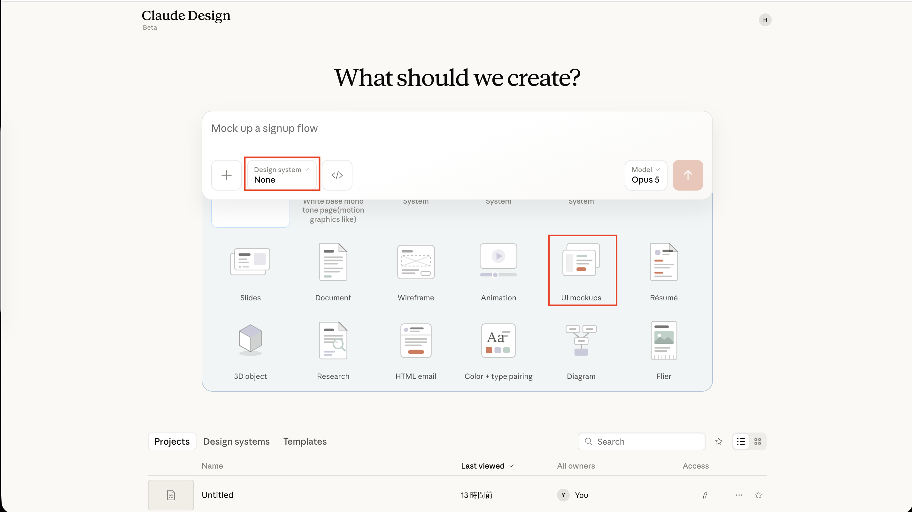
同じバー右側の 「Model」 を押すとモデル一覧が開き、その下に Effort（AI がどれだけ深く考えるかの設定）の項目がある。 Effort が高いほど品質は上がるが、トークン消費も増える。
- モデルは Opus 5 を選ぶ
- 推奨は Effort: Medium。Team standard などトークンに余裕がないプラン向けである。一周体験が目的なのでこれで十分である
- Team Premium / Max などトークンに余裕があるプランの人は High 以上に上げてよい
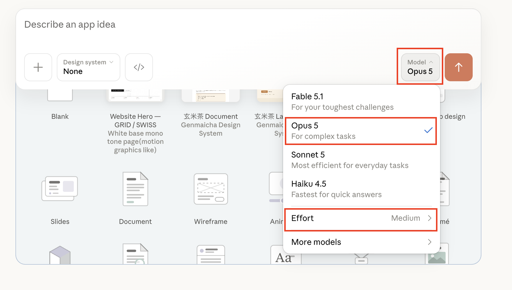
上の画像は Effort を High にした例である。生成が始まったあとは画面左下に Opus 5 Medium のようにモデル名と Effort が表示され、そこからも変更できる。
Claude Design は Beta であり、画面の配置・名称・機能はバージョン更新で変わる（プラン・環境によって表示が異なる場合もある）。この資料のスクリーンショットと違っていても、やること自体（種類を選ぶ／デザインシステムを None にする／プロンプトを送る）は変わらない。見当たらない場合は入力欄の周辺・設定メニューを探す。
流れ
- Claude Design に「何を・誰に向けて作るか／何を売るか／欲しい機能」を伝えて LP だけデザインを生成する
- プロンプトを送ると、Claude Design は確認フォーム（6問程度）を返してくる。だから最初から「和モダンで緑系で…」と細かく指定する必要はない。むしろサービスの中身（何のサービスか・売りたいもの・載せたい機能）を伝える方が効く
- 最初に渡すプロンプト例:
この程度の粒度で十分。色・フォント・トーンは Claude Design が聞いてくれるので最初から細かく書かなくてよいSlack AI サブスク SaaS『玄米茶』の LP を作りたい。 月額／年額プランを売りたい。 LP に載せるセクションは 特徴・料金プラン・FAQ の3つ。 ナビには お問い合わせ と マイページ へのリンクも置く（それらのページ自体は作らなくてよい）。 ターゲットはライトエンジニア層。 デザイン案は3つ出してほしい。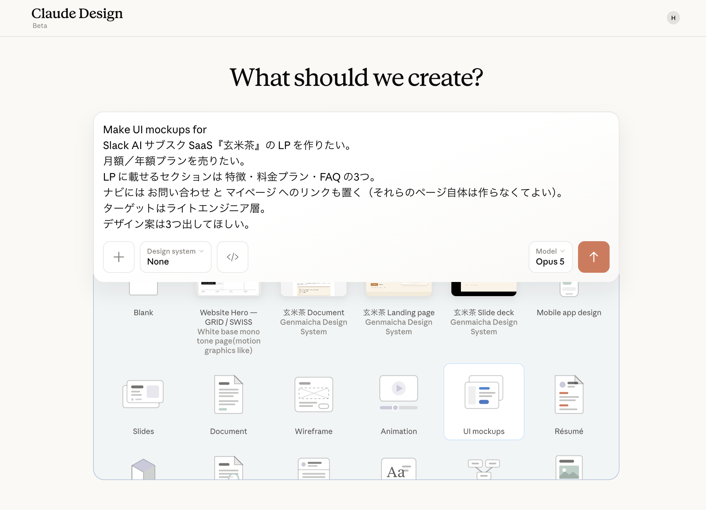
- 送ると確認フォームが出る（「6問だけ。空欄のままでも送信OK、その場合は私が判断します」）。答え方は次のとおり
- 「ビジュアルの下敷きにするデザインシステムはありますか？」→ 空欄のまま
- 「既存のコードベース／リポジトリはありますか？」→ 空欄のまま
- サービスの中身・料金プランなど内容の質問には答える。決まっていなければ空欄でよく、その場合は Claude Design が仮の値を置く
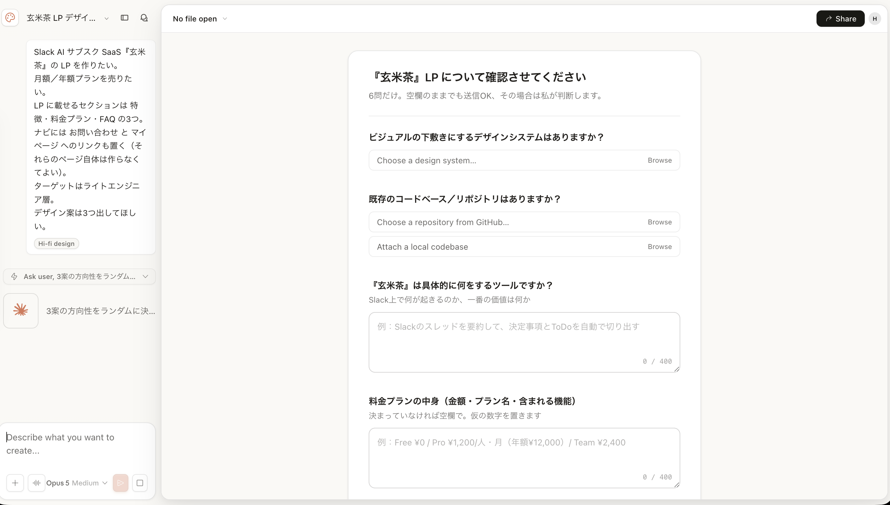
- 出てきた3案を見比べて1つ選ぶ
- 最初の1案でなんとなく進めず、3案を見比べてから決める（選択肢を見てから選ぶのが AI 活用のコツ）
- 決めたらチャット欄で 「1a でお願いします。他のものは消しても構いません」のように伝える。選んだ案だけがフルページに整えられる
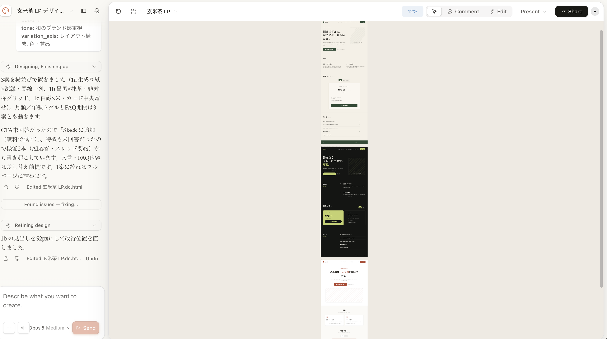
- トーン・配色・アクセントは Tweaks から後で調整できる
- 画面上部ツールバーの Tweaks アイコン（更新アイコンの隣）を押すと「Describe a tweak...」入力欄と「Ideas」が出る。ここに切り替えたい軸を書いて送る（「Ideas」を押せば候補を出してくれる）
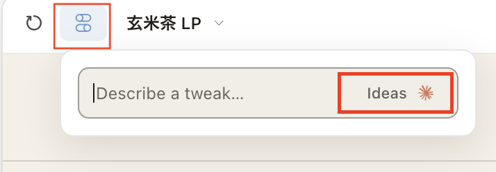
- Tweaks が生成されると上部にバーが並び、ドロップダウンやスウォッチでその場で切り替えられるようになる（例:
accent= 深緑・弁柄・藍・墨、paper= 生成り紙・白磁・鳥の子、rhythm= ゆったり・標準・引き締め）。どの軸が出るかはデザインごとに変わる
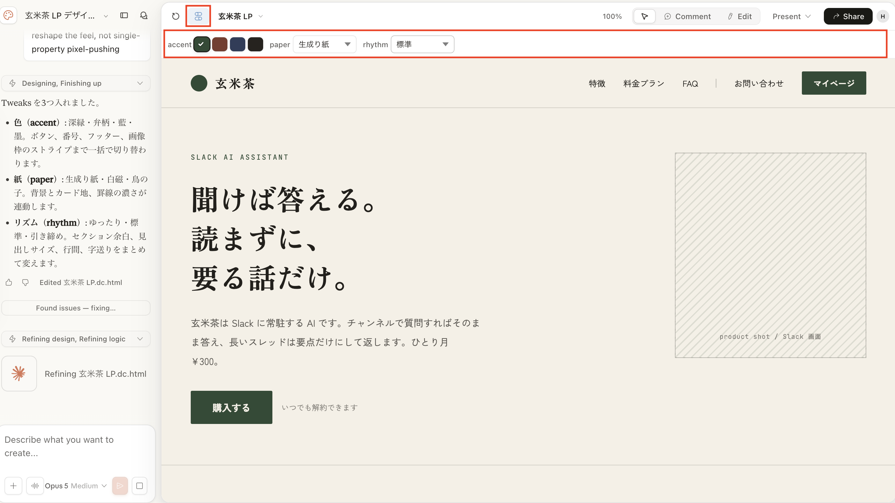
- LP を見直し、不要なセクションや機能はチャットで削除・修正を依頼する
- Claude Design はプロンプトの意図を超えて機能やセクションを追加することがある。「このセクションは不要です」「このボタンを消してください」とチャット欄で伝えれば修正してもらえる
- 複数まとめて伝えてよい。例:「CTA が『Slack に追加』になっていますが『購入する』にしてください。ナビの『Slack に追加』は『マイページ』遷移ボタンにしてください。料金プランは横に並べてください」
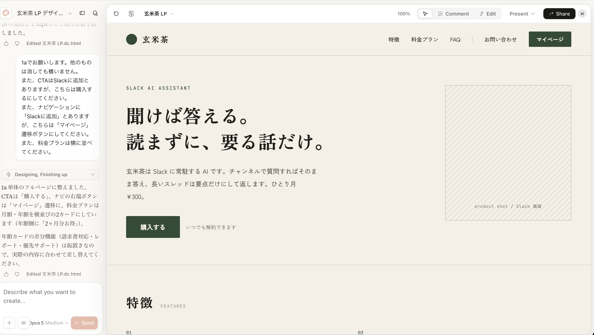
- 仕上がったデザインを zip でエクスポートしておく
- 画面右上の 「Share」 を押し、Export の 「Claude Code — Implement this design in code」→「Send」を選ぶ
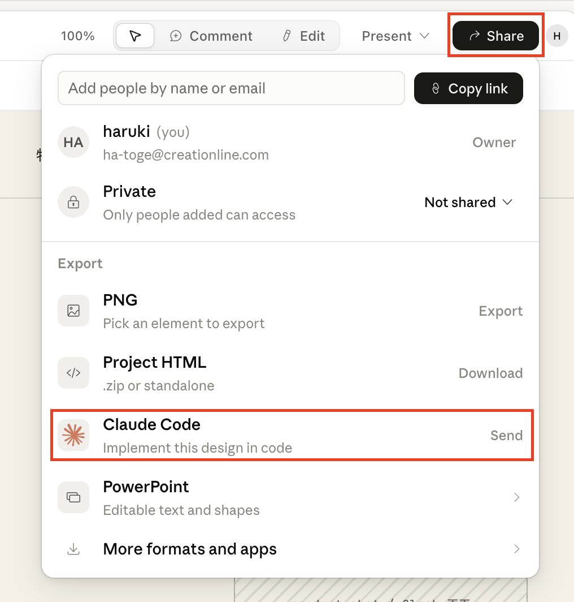
- Hand off to Claude Code ダイアログが開くので、「Download .zip」でダウンロードする（タブは Local agent のまま）
- 隣の 「Copy prompt」は Claude Code に貼るためのプロンプトを取るボタンだが、このワークショップでは使わない。[2] では
SCREEN_SPEC.mdと組み合わせた独自のプロンプトを使うためである
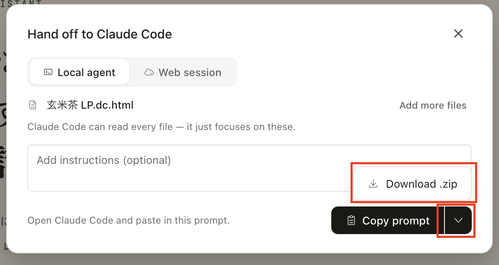
- Export の 「Project HTML」→「Download」からでも同じ zip が取れる。どちらでもよい
💡 参考: 細部を数値で直接触りたい場合は「Edit」タブもある。
要素を選択すると、その場で編集できる項目は次のとおりである。デザインにこだわる人向けの機能である。
- リンク先
- テキスト
- フォントとサイズ
- 余白

ポイント
- 「それっぽいものが作れた」で十分である。完璧より方向性の確定が目的である
- 最初に伝えるのはサービスの中身（何のサービスか・売りたいもの・載せたい機能）。色味・トーン・雰囲気は Claude Design の質問に答えながら決めればよく、見た目の細部は後から Tweaks で触る
- いきなり1案に飛びつかない。出てきた3案を見比べて選ぶ
- 言語化テキストを書くより、デザイン Project（zip）を丸ごと渡すのが [2] への一番の橋渡しになる
- チャットは何度でも使える。「このボタンの色を変えて」「このセクションを上に移動して」など気になる点は遠慮なく伝える
- 他ページの画面は作らせない。お問い合わせ・マイページはナビにリンクを置くだけでよく、ページの中身は [2] Claude Code で実装する。Claude Design はデザインシステム確定だけに使う
- Claude Design の質問への回答の自由度
- 自由に決めてよいもの: トーン、配色、キャッチコピーなどの見た目と言い回し。Claude Design の質問にそのまま答えればよい
- 要件として外せないもの: LP に料金プランを載せる。プラン数や金額は自由だが、サブスクリプション（月額／年額など）であることは必須である
✅ 完了の定義（これが満たせたら [2] へ）
- LP の配色・トーン・セクション構成が決まっている
- 「購入する」ボタンが料金セクションへの導線になっている
- デザインを zip でエクスポートでき、[2] にそのまま渡せる状態になっている
[2] Claude Code でフロント作成
ゴール: デザイン通りの SPA（Single Page Application＝1枚の index.html を JavaScript が書き換えて全ページを表示する作り）の全画面がローカル（npm run dev で起動する URL）で動く（Section 1 終了時の到達点）
まず: SCREEN_SPEC.md を作る
Claude Code にプロンプトを渡す前に、リポジトリのルートに SCREEN_SPEC.md を作る。これをコピーして、自分のサービスの内容に適宜書き換える：
# SCREEN_SPEC.md
## / (LP)
- ヒーロー・特徴・料金プラン（月額/年額）・FAQ
## /contact (問い合わせ)
- 名前・メール・本文
## /mypage (マイページ)
- アカウント情報・購入の証・サブスクリプション状況
## /success (購入完了)
- 購入完了メッセージ＋マイページへのリンク手で書く代わりに Claude Code に書かせる — オプション
次のプロンプトの上3行を自分のサービスに書き換えて送る（「制約:」以下はそのままでよい）。[1] の3案生成の待ち時間に進められる。
リポジトリのルートに SCREEN_SPEC.md を作って。
サービス概要: <1〜2行。何をするサービスか>
料金: <月額・年額の金額>
画面: / (LP) ・ /contact ・ /mypage ・ /success の4枚
各画面について「画面に何が表示されるか」を箇条書きで書いて。
コンポーネント名やライブラリ名など実装の話は書かないこと。
制約:
・LP のセクションは ヒーロー / 特徴 / 使い方 / 料金 / FAQ
・グローバルナビに 特徴 / 料金 / FAQ / お問い合わせ / マイページ を置く
・/mypage はメールアドレス入力で本人確認してから
アカウント情報 / 購入の証 / サブスクリプション状況 を表示する
・/success は購入完了メッセージとマイページへのリンク
・購入フローは決済なしの簡易版
（料金セクションの購入ボタン → メール入力 → 購入の証を発行 → /success）「購入の証」の呼び名（ライセンスキー／API キー／ダウンロードコードなど）は自分の題材に合わせて決めてよい。制約に書いていないので AI が決めてくるが、気に入らなければ直す。
⚠️ 生成された SCREEN_SPEC.md は最初から最後まで読み、自分の意図と違う箇所を直してから [2] に進むこと。ここで直さなかった箇所はそのまま実装され、Section 3 [11] のテスト設計でも「正しい仕様」として扱われる。上の雛形の内容を満たしているかが最低限の確認点になる。
もっと具体的な記入例（玄米茶サンプル）を見る — 参考
# SCREEN_SPEC.md — 玄米茶（Slack AI サブスク SaaS）
サービス概要: Slack に入れると会話の要約・タスク代行・検索をしてくれる AI bot。月額/年額のサブスク。
## 共通
- グローバルナビ: ロゴ「玄米茶」/ 特徴 / 料金 / FAQ / お問い合わせ / マイページ
- CTA「購入する」は料金セクション（`#pricing`）へ。**「無料で試す」等の文言は使わない**
- フッター: ナビ再掲・© 玄米茶
## / (LP)
- ヒーロー: キャッチ「Slackの会話、ぜんぶ玄米茶におまかせ。」＋サブコピー＋CTA「購入する」→ 料金へ
- 特徴（features）: 要約 / タスク代行 / 検索・思い出し / 日本語理解 の4つ
- 使い方（3ステップ）: 追加 → 声かける → おまかせ
- 料金プラン（pricing）: 月額 ¥300/月 ・ 年額 ¥3000/年（いちばん人気）。各プランの CTA「購入する」→ メールアドレス入力フォーム
- FAQ: 5問
- 問い合わせ導線
## /contact (問い合わせ)
- フォーム: 名前・メール・本文 → 送信（`POST /api/contact`）→ 受付メッセージ
## /mypage (マイページ) — 購入者向けアカウント管理画面
アクセス時にまずメールアドレス入力フォーム → 本人確認後に以下3ブロックを表示:
### アカウント
- メールアドレス / ステータスバッジ「✓ 契約中」
### ライセンスキー
- マスク表示（例: GMC-●●●●-●●●●-XXXX）/「メールで送信」ボタン /「セキュリティのため全体は表示していません」
### サブスクリプション
- 現在のプラン（例: 年間プラン）/ 次回更新日 /「プランを変更」「支払い方法を変更」「解約する」ボタン
## /success (購入完了)
- メールアドレス入力後の購入完了メッセージ ＋ 発行されたライセンスキー表示 ＋ マイページへのリンク
## 購入フロー（Section 2・決済なし簡易版）
- 「購入する」→ メールアドレス入力 → `POST` でライセンスキー発行 → `/success` で表示（Section 3 [9] で Stripe に差し替え）流れ
- リポジトリのルートで Claude Code を起動する
- Claude Design の Project（zip）を、
design.zipという名前でリポジトリ直下に置く。以下のプロンプトを自分の SaaS の内容に合わせて適宜書き換えて送る。wrangler.jsoncは Cloudflare の CLI「wrangler」の設定ファイルで、Worker 名や配信設定を書く。その Worker 名nameがデプロイ先 URLhttps://<name>.workers.devになるので、自分の名前に書き換えること。
使えるのは小文字英数字とハイフンのみで、大文字・アンダースコア・日本語は使えない。frontend/ に Vite + React + TypeScript + Tailwind CSS v4 + shadcn/ui で SPA を作って。 ルーティングは React Router を使って。 wrangler.jsonc も作って（name は <自分で決めた名前> にして）。 リポジトリ直下の design.zip（Claude Design のデザイン一式）を展開して参考にし、 ルートの SCREEN_SPEC.md に書いた全画面を実装して。 マイページはアクセス時にメールアドレス入力（簡易ログイン）を挟んでから内容を表示して。購入は料金セクションのメール入力から /success（購入完了）へ遷移させる。/success 自体は直接開かない画面なので、メール入力は付けないで。 この段階では API がないので、全画面モックデータで表示して。 npm run devで全画面を目視確認し、問題があれば具体的に伝えて修正を依頼する
ポイント
- API はまだ無い。この段階ではモックデータで画面が動く状態を作る、と割り切る
✅ 完了の定義（Section 1 の到達点）
npm run dev が使うポートは環境によって変わる（使用中のポートがあれば自動で別のポートが割り当てられる）。ターミナルの出力に表示された URLを開くこと。
npm run devを実行し、表示された URL を開くと LP が崩れずに表示される（Tailwind が効いている）SCREEN_SPEC.mdで定義した全画面が実装され、React Router で遷移できる（データは API 前なのでモック）- デザイン [1] の方向性が画面に反映されている
- 完了したら Claude Code に依頼する:
フロント実装の作業をコミットして dev ブランチに push して。
[3] Section 1 フロントデプロイ（Cloudflare Workers）
ゴール: フロントが完成したらすぐに公開 URL を手に入れる（バックエンドは Section 2 で繋ぐ）
ここではフロントだけを Worker としてデプロイし、Section 2 で API を追加して同じ Worker に統合する。
流れ
手順1〜2（インストール〜 whoami）はブラウザ連携とアカウント確認があるため自分のターミナルで打つ。手順3〜4（ビルド〜デプロイ）は Claude Code に「ビルドしてデプロイして」と任せてよい（下のコマンドは自分で打つ場合の参考）。
- wrangler（Cloudflare の CLI ツール。デプロイやクラウド資源の作成をコマンドで行う）をグローバルインストールする:
npm install -g wrangler - Cloudflare にログインする:
wrangler login wrangler whoamiloginでブラウザが開く → Cloudflare 上で「許可」するwhoamiでログインできたか／想定アカウントかを確認する
- 会社用・個人用など複数アカウントを持っている人は
whoamiで取り違えていないか必ず確認する（別アカウントに資源を作る事故を防ぐ）
- フロントのルートにいることを確認し、ビルドする:
npm run build - Cloudflare Workers にデプロイ:
wrangler deploy初回は
wrangler.jsoncのnameが Worker 名として登録される。2回目以降は同じコマンドで上書きデプロイされる。
また、アカウントで初めての Worker デプロイではworkers.devのサブドメイン（URL の<account>部分）の登録を求められることがある。 - 発行された URL をブラウザで開いて LP が表示されることを確認 🎉（実際の URL は
https://<name>.<アカウントのサブドメイン>.workers.devの形。本資料では以降、短くhttps://<name>.workers.devと表記する） - URL をチャットに貼って共有する
Section 1 のデプロイは API が無いのでデータはモック表示のままである。Section 2 で API を追加して同じ URL のまま再デプロイする。
✅ Section 1 の到達点
npm run devの出力に表示された URL で LP・全ページが表示できる- 自分の
https://<name>.workers.dev（公開 URL）で LP が表示できる - 完了したら Claude Code に依頼する:
フロントデプロイの作業をコミットして dev ブランチに push して。
Section 2: バックエンド実装（Claude Code）と品質担保
[4] Claude Code でバックエンド作成
ゴール: フロントと API がつながり、ローカルで一通りの機能が動く
このステップでやること（全体像） — Section 1 で作った「見た目だけ動くフロント」に、中身（API とデータ）をつなぐ。やることは大きく4つ:
- API を作る —
backend/に問い合わせ受付・購入の証の発行などの API を実装する - データの入れ物を用意 — 保存用の DB（D1）を作る
- フロントと API を1つにまとめる — 別々に動いていた2つを Worker 一本に統合し、フロントのモック表示を本物の API 呼び出しに差し替える
- ログインは今は簡易版 — リクエストヘッダ
x-user-emailのメールアドレスをそのまま本人とみなす「モック認証」で進める（本物のログインは Section 3 [10] で差し替え）
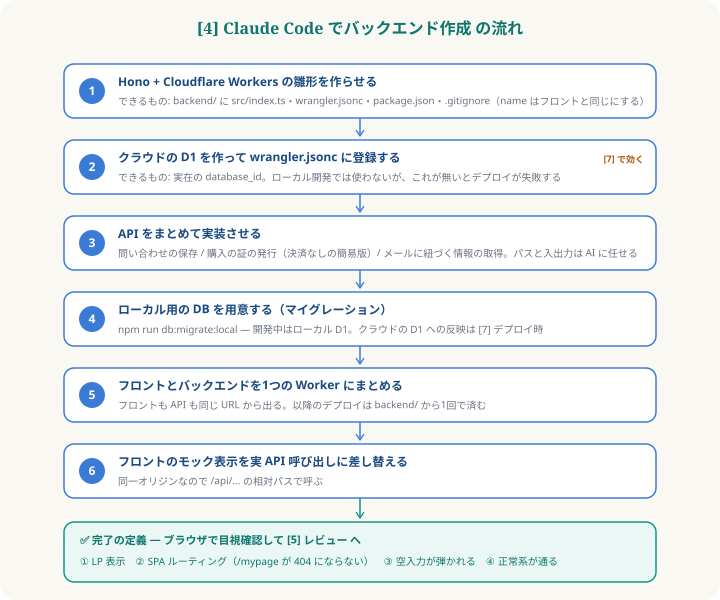
流れ
- Hono + Cloudflare Workers のプロジェクトを Claude Code に作らせる（
backend/）- 成果物:
backend/に Hono と Cloudflare Workers の雛形（src/index.ts・wrangler.jsonc・package.json）が揃った状態 npm run devを実行し、表示された URL を開いて応答が返れば OK.gitignoreも一緒に作らせる（node_modules/dist/.dev.varsなどを除外）- プロンプト例:
backend/ に Hono + Cloudflare Workers の API プロジェクトを作って。 - src/index.ts・wrangler.jsonc・package.json を揃える - wrangler.jsonc の name は frontend/wrangler.jsonc と同じ名前にする - まずは GET / が動作確認用のレスポンスを返す最小構成でよい - .gitignore も作って（node_modules / dist / .dev.vars を除外）name をフロントと同じにする理由: 手順5 でフロントのビルド結果を
backend/の Worker から配信する形に統合するので、Section 2 以降のデプロイはbackend/のwrangler.jsoncだけを見て走る。
name が Section 1 と同じなら同じ名前の Worker を上書きすることになり、Section 1 で手に入れた URL（https://<name>.workers.dev）をそのまま引き継ぐ。
name が違うと別の Worker が新しく作られ、URL も別物になる。
- 成果物:
- クラウド資源（DB）を作って
wrangler.jsoncに登録する- D1 … Cloudflare の SQLite データベースである。問い合わせ・購入の証などずっと残したいデータを保存する
- Claude Code に任せる:
Cloudflare の D1 を作成して、wrangler.jsonc に書き込んで。
なぜ、ローカル開発では使わないクラウドの D1 を先に作るのか？ —
wrangler.jsoncに実在のdatabase_idが書かれていないと、[7] のリモートデプロイが失敗するからである。ローカル開発自体はクラウドの D1 に触れないので、ローカルとクラウドのデータは別物である。 - API をまとめて実装させる
- 要件は
SCREEN_SPEC.mdに書いてあるので、プロンプトで機能を並べ直さない。API のパス・入出力の設計は AI に任せる - 購入の証の発行は決済なしの簡易版でよい（[9] で Stripe 購入 → Webhook 発行に差し替える）
Hono + Cloudflare Workers + TypeScript でバックエンドを実装して。 D1（SQLite）を使うこと。マイグレーションファイルは migrations/ 以下に作って。 ルートの SCREEN_SPEC.md と frontend/ のコードを見て、必要な API を backend/ に実装して。 購入の証の発行は決済なしの簡易版でよい。【補足】この作り方の割り切りと、実務で外せない設計を見る
ここでは「
SCREEN_SPEC.mdとfrontend/のコードを見て API を作って」と頼んでいる。3日で「動いて公開されている」状態まで到達することを優先した、ワークショップ用の割り切りである。SCREEN_SPEC.mdは画面仕様なので、この作り方ではデータモデルの根拠が「画面に映っている項目」だけになる。画面が語るのは「今この瞬間に何を見せたいか」なので、画面から起こしたテーブルは画面が変わるたびに揺れる。ローンチ後に機能を足すと何が起きるか
ローンチ後に機能を足していく前提なら、最初の設計が効いてくる。特に先に決めておくべきなのは後から取り返しがつかないもので、下の表の6つである。後から変えられるもの（正規化の度合い・インデックス・API のレスポンスの形・画面・集計）は、走りながら決めてよい。
論点 なぜ後から取り返しがつかないのか 記録の有無 現在値だけを持って上書きしていると「いつ・何が起きたか」が残らない。後から購入履歴や変更履歴の画面が必要になっても、記録していなかった期間の分は作れない ID の選び方 メールアドレスを主キーにすると、メール変更やアカウント統合で詰む 削除の仕方 物理削除したデータは戻らない（論理削除やアーカイブにするか） 外部 ID の保存 Stripe の customer / session の id を残していないと、後から突合できない 冪等キー Webhook の再送を判別できず二重計上すると、後から真偽を分けられない 単位・通貨・時刻 タイムゾーンや丸めの扱いが混在したまま溜まると、遡って直せない ここを押さえずに走ると、機能追加のたびに「そのデータは残っていない」「この ID では紐付けられない」に突き当たり、移行スクリプトと欠損データの手当てに時間を取られる。
本ワークショップで実際に踏んでいる割り切り
- 認可を
x-user-emailに任せている … 他人のメールアドレスを送れば他人のデータが読める。[10] で本物のトークン検証に差し替えて閉じる - 購入を出来事として積んでいない … 現在値で持っているため、[9] の Stripe Webhook の再送に弱い（本来は冪等性が要る）
- 検証がフロント側だけになりがち … API で弾けないと守れない。[6] の機能テストでここを確認する
本来必要なバックエンド作成の進め方
実務なら、AI に実装を投げる前に次を人間が決める。文章1枚でよい（その叩き台は AI に書かせてよい）。
決めること 中身 識別子 ユーザーや購入の主キーには、値が変わらない専用の id（サロゲートキー）を使う。メールアドレスは変更されるため主キーにしない履歴 購入・返金・解約はイベントとして1行ずつ追記し、行の更新はしない。「現在利用可能か」はイベント群から導出する 制約 NOT NULL・UNIQUE・外部キー制約を migrations に書き、不正なデータを DB 側で拒否する冪等性 Webhook は再送される前提で、 event_idにUNIQUEを張り、同じevent_idの2回目は無視する認可 認証とは別に、各クエリの WHERE条件に本人のuser_idを必ず含めるという規則を決める削除と保持 物理削除か論理削除（ deleted_at列）かを決め、購入・問い合わせの保持期間も決める単位と形式 金額は最小通貨単位の整数（日本円なら 3000= 3000円）、日時は UTC で保存し、表示時にタイムゾーン変換するそのうえで「この方針どおりに実装して」と渡し、実装後に決めたことが入っているかを確認する。AI が速いのは実装であって、この決定は人間が持つ。
ここで残した粗さの一部は後工程であぶり出す構成にしている — [5] レビュー・[6] 機能テスト・[11] セキュリティレビュー。「AI に任せた結果を鵜呑みにしない」こと自体が学習項目である。
- 要件は
- ローカル用の DB を用意する（マイグレーション）
Claude Code に依頼する:
マイグレーションとは
マイグレーション＝テーブル定義の SQL ファイル（
migrations/以下）を順に適用して、DB を作る・変える仕組みである。ここではローカル用の D1（--local）を用意する。開発中はローカル D1 を使用し、クラウドの D1 への反映は [7] デプロイ時に行う。マイグレーションを実行してローカルの D1 にテーブルを作って。 - フロントとバックエンドを1つの Worker にまとめる
今はフロント用・バックエンド用で2つのサーバーが別々に動いている。これをWorker 一本にまとめると、フロントも API も同じ URL から出るようになる。
- 本番では同じ Worker から静的ファイル（フロント）と API の両方を配信する形にする
- 統合後はデプロイを
backend/から行う。backend/wrangler.jsoncのassets.directoryがフロントのビルド結果（frontend/dist）を指すので、backend/で1回デプロイすればフロントと API が同時に上がる。実際のデプロイ手順は [7] にある
frontend/ をビルドして backend/ の Worker から配信できるようにして。 SPA なので未知のパスは index.html にフォールバックさせて。 - フロントのモック表示を実 API 呼び出しに差し替える
Claude Code への指示例:
フロントのモック表示を実 API 呼び出しに変えて。 フロントと API は同じ Worker から配信されているので、 http://localhost:... のようなホスト名は書かず、/api/... の形で呼ぶ。
npm scripts を2つ追加する
毎回打つには長い操作だけ、package.json の script に名前を付けておく。追加は Claude Code に任せる：
backend/package.json に以下の npm scripts が無ければ追加して。
- build:front: npm --prefix ../frontend run build
- deploy: npm run build:front && wrangler deploybuild:front はフロントを dist/ にビルドする（ローカル確認のたびに使う）。deploy はビルドとデプロイをまとめたもので、ビルド忘れによる「古い画面が公開される」を防ぐため [7] で使う。
ローカルでの動かし方
自分でコマンドを打たず、Claude Code に依頼して実行させるのが基本である:
ローカルで起動して動作確認して。手元で直接打つ場合のコマンドを見る
cd backend && npm run build:front && npm run devWorker が配信するのはビルド済みの frontend/dist であり、フロントのソースを直接読むわけではない。そのためフロントを変更したら毎回 npm run build:front が必要になる。npm run dev の出力に表示された URL で確認する。
ポイント
- 認証（Clerk）・決済（Stripe）・メール（Resend）は Section 2 では深追いしない → Section 3 のオプション課題 [8][9][10] で扱う
- Section 2 のログイン周りはモック認証でよい（手順3）。後から Clerk に差し替えやすい作りにしておくと [10] が楽になる
- Section 2 本編は環境変数・シークレット無しで動く（Stripe / Clerk / Resend のキーが要るのは Section 3 のオプションから）
✅ 完了の定義（[5] へ進む条件）
npm run build:front && npm run dev でサーバーを起動し、以下をブラウザで目視確認する（⚠️ コマンドの結果だけで満足しない。表示と遷移はブラウザでしか確認できない）：
- LP 表示: ブラウザで表示された URL のトップ（
/）を開き、LP が崩れずに表示されること - 正常系の動作: 問い合わせフォームに正しい値を入れて送信 → 画面の表示が期待どおり変わること
- DevTools の Network タブに
/api/...へのリクエストが出ていて、成功のレスポンスが返っていること。ここでフロントと API がつながったことを確認する
- DevTools の Network タブに
- 統合後も
/mypageが表示できる: ブラウザのアドレスバーに/mypageを直接入れて開き、404 にならず画面が表示されること404 になる場合
SPA は
index.html1枚なので、/mypageというファイルは存在しない。アドレスバーに直接入れると、Worker はファイルを探して見つけられず 404 を返す。直し方: 知らないパスには
index.htmlを返すよう、backend/wrangler.jsoncのassets.not_found_handlingに"single-page-application"を追加して再起動する。
[5] レビュー
ゴール: AI が書いたコードをデプロイ前に点検し、指摘を直してから push する
Claude Code のコマンドで点検する
ローカルの差分を、Claude Code の組み込みコマンドで点検する。
⚙️ Claude Code の Effort（どれだけ深く考えるか）はトークン消費に直結する。レビューはコード全体を読むため特に消費が大きい。
既定の Medium で実行するのを推奨（Team standard などトークンに余裕がないプランで途中枯渇を防ぐため）。Team Premium / Max などトークンに余裕があるプランの人は High 以上に上げてよい。
/code-review— コードの正しさ・簡潔さ・効率を見るレビューである。バグや冗長な実装を指摘してくれる/security-review— セキュリティ観点のレビューである。SQL インジェクション等・認証の抜け・シークレットの扱いなどを確認してくれる
security-guidance（Section 1 で導入したプラグイン）は、編集・コミットのたびに自動でセキュリティ点検が走っている。自分で実行する必要はない。
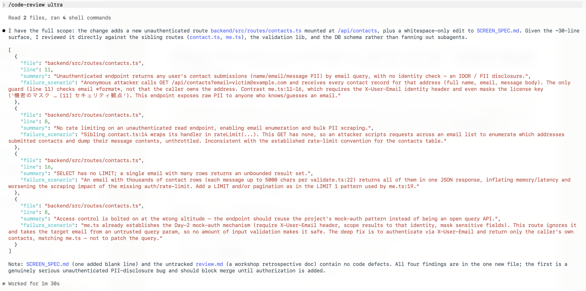

この2つのコマンドは Section 3 [11] セキュリティレビューの点検でもそのまま使う。
レビュー後に push する
指摘があれば直してから push する。大きな問題がなければそのまま push してよい。
バックエンド実装とレビュー修正の作業をコミットして dev ブランチに push して。ここで push しておくと、[6] のテストが失敗したときに「どの変更で壊れたか」を git log から追いやすい。
✅ 完了の定義（[6] へ進む条件）
/code-reviewと/security-reviewを実行した- 出た指摘を直したか、直さないと判断した理由が自分で言える
- ここまでを dev ブランチに push した
[6] 機能テスト
ゴール: アプリが要件を守れているかを一つずつ確かめ、守れていない箇所を特定して直す。
機能テストの考え方
この工程の目的は、テストを緑にすることではなく、守るべきことを決め、一つずつ確かめて結果を書き残すことにある。
アプリを誰が使うか、何が起きたら困るかを知っているのは人間だけである。さらにテストが落ちたとき、AI は問答無用でテスト条件を緩めて通すことがある。そのため要件を決めるところから結果を判定するところまで、全部を AI に任せることはできない。
流れ
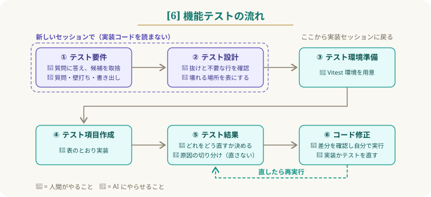
| 工程 | やること |
|---|---|
| ① テスト要件 | AI と壁打ちしながら、このサービスにおいて守るべきことを箇条書きにする |
| ② テスト設計 | 要件ごとに機能と発生し得る問題「どこが壊れていたらテスト要件を満たせないか」を整理し、表にする |
| ③ テスト環境準備 | Vitest 設定など、テストのための実行環境を用意する |
| ④ テスト項目作成 | 表を渡してテストコードを作成する |
| ⑤ テスト結果 | テストを実行し、通っていない項目の原因を切り分けする |
| ⑥ コード修正 | ⑤ の判定ごとに実装かテストを直し、再実行して、結果を表に書き残す |
① テスト要件
大事な前提：① テスト要件と ② テスト設計は、新しいセッションで始める。
実装を書いたセッションのまま続けると、コンテキストに実装が残った状態で要件と期待結果を書くことになる。
やること: AI に質問させながら、守るべきことを箇条書きに落とす。
- Claude Code に壁打ちを頼む。前提を人間が先に整理しておく必要はない。読ませる
SCREEN_SPEC.mdは [2] で作ったものである。このアプリのテスト要件を決めたい。壁打ちに付き合ってほしい。 読むのは SCREEN_SPEC.md だけにする。frontend/ と backend/ の実装コードは読まないこと。 まず、要件を決めるために必要なことを私に質問して。 わからないことは推測せず、必ず質問すること。 質問には次を必ず含めること。 ・漏れたら一番困る情報は何か ・壊れたら・止まったら一番困る操作は何か 書くのは「アプリが守るべきこと」だけにする。 ・主語はアプリか利用者にする。開発者やテストコードを主語にしない ○「他人の購入の証を返さない」 ✕「新しい API にはテストを必ず書く」 ・破られたときに利用者に何が起きるかを、1行で言えるものだけ ・テストの書き方、モックの方針、どこまでテストするかの範囲は書かない 決まったら docs/TEST.md の「## テスト要件」に箇条書きで書いて。 各項目は「〜してはいけない」「〜は必ず」の形にすること。 ・小見出しで分類しない「わからないことは推測せず質問して」の一行がないと、AI は「一般利用者向けの公開サービスと仮定して」のように、わからないことを推測で埋めて先に進む。推測で置いた前提から導いた要件も、やはり推測である。
主語を縛る3行がこのプロンプトの要である。「〜してはいけない」「〜は必ず」はコーディング規約の言い回しでもあるので、形だけ指定すると AI は開発者が守るルールを書く。「新しい API にはテストを必ず書く」「
fetchは必ずモックに差し替える」といった項目が並び、② テスト設計で「どこが壊れていたら守られないか」を問うても答えられない。壊れる場所がアプリの中にないからである。 - AI との壁打ちによって出た候補を、破られたら何が起きるかを1行で言えるかという基準にかけて取捨する。
「発行した購入の証が消えない」なら、破られたときに「金を受け取ってモノを渡していない状態になる」と言えるため、これは載せる。落ちるのは次のような候補である。
- 表示が速い — 何秒から問題なのかを決めていないので、破られたかどうかが言えない
- エラーが出ない — 何も起きていない状態と区別できないので、破られたかどうかが言えない
落とした候補は消して終わりでよい。期待結果が書けないので、② テスト設計で表の行にならない。
docs/TEST.mdがこの形になったら ① テスト要件 は終わりである。## テスト要件 - 購入の証とメールアドレスを本人以外に返さない - 購入が成立したら購入の証は必ず発行され、再読込しても消えない - 同じ購入で二重に購入の証が発行されない - 認証が必要な API は未認証のアクセスを拒否する - 必須項目が空の入力を受け付けない
ポイント:
- ここで出た要件が以降すべての土台になるので、モデルは高精度なもの（Fable / Opus）を使う。Effort は既定の Medium で足りる
- 書き終えた「## テスト要件」は、② テスト設計 以降で AI に書き換えさせない。上書きされると、② テスト設計で行を判定する根拠と、⑤ テスト結果で原因を帰属させる根拠が消える
- テスト要件で守るべきことを漏れなく列挙しきることは目標にしない。列挙し漏れが無いことを確かめる手段がないので、いくら時間をかけても終わったと判断できない
② テスト設計
やること: 要件1つを「壊れる場所」に分け、場所ごとに表の1行を作らせる。
- Claude Code に表を書かせる。
docs/TEST.md の「## テスト要件」と SCREEN_SPEC.md を読んで、 同じファイルに「## テスト項目」として表を追記して。 ・要件1つについて「どこが壊れていたらこの要件が守られないか」を挙げ、 挙げた場所ごとに1行を作る ・列は「番号 | 守る項目 | どこで確かめる | 前提条件 | やること | 期待結果 | 結果」 ・番号は T-001 から始まる連番にする（要件ごとに振り直さない） ・「どこで確かめる」は 関数 / API / 画面 / 通し のどれか ・見る場所が違えば別の行にする（レスポンスを見る行と DB を見る行は分ける） ・前提条件は空欄にしないこと ・「結果」列は空欄のままにする ・「## テスト要件」は読むだけ。書き換えないこと ・API のパスやリクエスト形式、要素の指定など「どう呼ぶか」は実装コードを見て合わせてよい ・ただし期待結果（何が正しい結果か）の根拠は要件と SCREEN_SPEC.md の記述に置き、 実装の出力に合わせないことこのプロンプトの中心は、どこが壊れていたらこの要件が守られないかを挙げさせるところにある。
「発行した購入の証が消えない」というテスト要件は、
- 画面が送信していない
- API がリクエストを処理していない
- DB に保存されていない
- 保存したものが読み出せない
という4箇所がテスト項目として挙がる。この4行がすべて緑になって初めて「発行した購入の証が消えない」と言える。
逆に「API がリクエストを処理している」ことだけを確かめると、テストは緑になるのに実際には動かない、ということが起こる。
テスト項目の表の例を見る
番号 守る項目 どこで確かめる 前提条件 やること 期待結果 結果 T-001 発行した購入の証が消えない 画面 購入フォームを表示 有効なメールで送信 発行 API が呼ばれる T-002 発行した購入の証が消えない API そのメールの記録が DB にない 発行 API を叩く 成功レスポンスに購入の証が入る T-003 発行した購入の証が消えない API 同上 発行後に DB を直接見る 購入の証が1件保存されている T-004 発行した購入の証が消えない API T-003 の状態 そのメールで取得 API を叩く 保存した購入の証が返る T-005 購入の証を本人以外に返さない API A 購入済み、B 未購入 B で購入の証の取得 API A の購入の証が返らない T-006 購入の証を本人以外に返さない 画面 同上 B でマイページを開く A の購入の証が出ない - 人間が確認する。見るものが2つあるので、順番に見る。
- 観点の抜け — ① テスト要件 で挙げた要件の範囲で、壊れる場所が足りているか。「発行した購入の証が消えない」に DB の行がない等
- テストしなくていい箇所 — 挙げた場所のうち、確かめるコストに見合わないものを落とす
「どこで確かめる」列に書けるのは、次の4種である。
環境と必要なパッケージは ③ テスト環境準備 で入れる。
| 語 | 叩く場所 | 見る場所 | コマンド |
|---|---|---|---|
| 関数 | 関数を直接呼ぶ | 戻り値 | npm test |
| API | HTTP リクエストを投げる | レスポンスと DB | npm test |
| 画面 | React を描画して操作 | 描画された内容 | npm test |
| 通し | 本物のブラウザで操作 | 実際の画面 | npx playwright test |
ポイント:
- 前提条件の列を空欄のまま ④ テスト項目作成に進めない。空欄だと、AI は初期状態を用意するコードを書かない。前のテストが残したデータがそのまま残り、テストはそれを見て通ってしまう
- 同じことを確かめられるなら、テスト範囲が狭いほうを選ぶ。関数がいちばん狭く、API、画面、通しの順に範囲が広がり、実行時間も書く手間も増える
- 番号は、AI にテスト名の先頭へ入れさせる。⑤ テスト結果 で表の行とテストコードを照合するために使う
③ テスト環境準備
やること: ② テスト設計 で作った表の「どこで確かめる」列に出てきた種類だけ、実行環境を作らせる。ただし「通し」は [12] で扱うので、ここでは除外する。
ここから実装のセッションに戻る。この ③ テスト環境準備 以降は実装コードを読ませてよい。
docs/TEST.md の「## テスト項目」の「どこで確かめる」列を見て、
必要なテスト環境だけを用意して。
・関数・API のテスト（backend/）: @cloudflare/vitest-pool-workers を使い、
設定は cloudflareTest プラグイン方式で書く
・画面のテスト（frontend/）: 同じ Vitest を jsdom 環境で使い、
@testing-library/react で描画・操作する
・表に出てこない種類の環境は入れないこと- バックエンドは Workers、フロントは jsdom を実行環境に用いる
@cloudflare/vitest-pool-workers＝バックエンドのテストを Workers と同じ実行環境で動かす公式アダプタである
④ テスト項目作成
やること: 表をそのまま渡して実装させる。表にないことはさせない。
docs/TEST.md の「## テスト項目」の表に従ってテストを実装して。
・テスト名の先頭に表の番号を入れる（例: test('T-003 発行後に DB に購入の証が1件保存されている', ...)）
・「期待結果」列の値をそのまま使い、実装コードから推測しないこと
・表にない項目を勝手に足さないこと
・「どこで確かめる」が「通し」の行は実装しないこと
・test.skip / it.todo / it.only を使わないこと
・固定待ち（waitForTimeout）を入れないこと
・モックしてよいのは外部サービス（メール送信、決済）だけ
・DB はモックしないこと。DB を見る行は実物の中身を確かめること⑤ テスト結果
やること: テストを実行させ、表とコードを突き合わせ、落ちた原因を切り分ける。直すのは次の ⑥ コード修正 である。
- 表とテストコードを番号で突き合わせる。
docs/TEST.md の「## テスト項目」の表にある番号と、 テストコードのテスト名に入っている番号を突き合わせて、 どちらか片方にしかない番号を挙げて。 「どこで確かめる」が「通し」の行は実装していないので、突き合わせから外すこと。 出力はそのまま見せること。要約しないこと。判定はこちらでする。- 表にあってコードにない → ② テスト設計 で作った行が ④ テスト項目作成 で落とされている
- コードにあって表にない → AI が勝手に足している
- 赤が出たときだけ、落ちた原因を切り分けさせる。全部緑ならこの手順を飛ばし、⑥ コード修正 の手順1 へ進む（不要になるのは ⑥ 手順2 の修正だけである）。この時点では直させない。
落ちているテストの原因を切り分けて。次の4つのどれかで判定して。 ・実装が要件を満たしていない ・テストの書き方が悪い（前提条件を用意していない、要素の指定が違う、など） ・テスト設計が誤っている（そもそも確かめる必要のない項目を挙げていた） ・要件そのものが間違っている（実装もテストも正しいが、要件の記述がずれている） 判定だけ報告して。まだ何も直さないこと。診断と修正を1回のやりとりでまとめて頼むと、AI は実装を直すより手数の少ない道、つまりテストの期待値を緩めて緑にする道を選ぶ。判定だけを先に受け取り、何を直すかは人間が決める。
ポイント:
- 落ちた行が出ること自体は成果である。「作ったつもりが作られていなかった」という発見だからである
⑥ コード修正
やること: ⑤ テスト結果 の判定にもとづいてフロント／バックエンドを直し、再度テストを実施して、結果を表に書き残す。
- 直させる前にコミットする。この工程では、テストファイルが意図した箇所以外で変わっていないことを手順4 で git の差分から確かめる。その差分の起点をここで作る。④ テスト項目作成 で新しく作られたテストファイルは、まだ git に追跡されておらず差分が出ない。先にコミットしておかないと、テストが改変されていても気付けない。
docs/TEST.md とテストコードとテストの設定をコミットして。 このあと git で確認するので、私が言うまで追加のコミットはしないこと。 - ⑤ テスト結果 の判定ごとに対処が変わる。実装かテストのどちらかを直させるときは、もう片方は変更禁止だと必ず明示する。
⑤ テスト結果 の判定 直す対象 実装が要件を満たしていない 実装を直させる（テストファイルは変更禁止） テストの書き方が悪い テストを直させる（実装は変更禁止） テスト設計が誤っている ② テスト設計 に戻ってその行を作り直す。作り直した行について ④ テスト項目作成 → ⑤ テスト結果 をやり直す（行を消す判断をした場合は、消した理由を結果列に残す） 要件そのものが間違っている 要件と表の期待結果を直し、その行だけ ④ テスト項目作成 → ⑤ テスト結果 をやり直す 実装を直させるとき:
T-005 の原因は認可の抜けなので、backend の実装を直して。 テストファイルは変更しないこと。 test.skip / it.todo / it.only を使わないこと。テストを直させるとき:
T-005 の原因は前提条件を用意していないことなので、テストを直して。 実装は変更しないこと。期待結果は docs/TEST.md の表の文言から変えないこと。 test.skip / it.todo / it.only を使わないこと。テストを直させるときは期待結果を勝手に書き換えさせない。放っておくと AI は期待結果を実装の出力に合わせて緑にできるが、それは ② テスト設計 で決めた発注内容を書き換えたのと同じで、何も確かめていないことになる。
ただし期待結果そのものが間違っていることもある。その場合は AI に直させるのではなく、判定を改めて設計に戻る。「テスト設計が誤っている」なら ② テスト設計 に戻って行を作り直し、「要件そのものが間違っている」なら要件と表の期待結果を直して、その行だけ ④ テスト項目作成 → ⑤ テスト結果 をやり直す。
直させたら再実行し、赤だった行が緑に変わったことを確認する。
- 判定と修正の結果を、表の「結果」列に埋めさせる。
docs/TEST.md の「## テスト項目」の表の「結果」列を埋めて。 ・緑だった行は「緑」 ・落ちた行は「落ちた → 原因 → どう直したか」 ・「どこで確かめる」が「通し」の行は「[12] で確認予定」 ・空欄を残さないこと ・「結果」列以外は書き換えないこと書かせたあと、判定が自分の見立てと合っているかを人間が読む。
結果列を埋めると、次のような表となる。② テスト設計 に載せた抜粋には無い行も含めている。
結果列を埋めた表の例を見る
番号 守る項目 結果 T-002 発行した購入の証が消えない 緑 T-003 発行した購入の証が消えない 落ちた → 保存処理が未対応 → 実装を直して緑 T-005 購入の証を本人以外に返さない 落ちた → 認可の抜け（バグ）→ 実装を直して緑 T-007 必須項目が空の入力を受け付けない 落ちた → 要件の書き間違い（名前は任意でよかった）→ 要件と期待結果を直して緑 T-008 購入の証を本人以外に返さない [12] で確認予定（通しの行） T-009 同じ購入で二重に発行されない 未修理 → 二重発行のガードが無い（時間切れ・持ち帰り） 結果列は、落ちた時点で止めずに、直したところまで書く。「落ちた」で終わっている行は、まだ作業が残っている行である。
「通し」の行は ④ テスト項目作成 で除外しているので、結果列に「[12] で確認予定」と書く。
- テストファイルの差分を人間が見る。
git diff -- '*.test.ts' '*.test.tsx'見るのは差分が出た／出ないではなく、出た場所が自分で指示したテストだけかどうかである。実装を直させただけの行のテストが書き換わっていたら、直されたのはアプリではなくテストである。
テストを直させた行は、変更の中身まで見る。期待結果の値が変わっていたら差し戻す。
- 最後に自分でテストを実行する。ここは「コマンドは Claude Code に依頼する」の例外である。AI の「緑になりました」で終わらせず、出力を自分の目で見る。
cd backend && npm test cd ../frontend && npm test出力末尾の
Testsの行を見て、skipped が0件であることを確かめる。 skipped があってもテスト全体は成功として扱われるので、画面は緑のまま、確かめた本数だけが足りなくなる。AI に実行させて結果を要約させると、この数字は要約から落ちる。skipped は
test.skipやit.todoと書いてあるときに出る。AI が skip に逃げる動機がいちばん強いのはこの工程である。「直して」と言われて通せなかったとき、skip はもっとも安く緑にできる手段になる。出ていた場合は、手順4 の
git diffでどこで入ったかが分かる。差分に出ていればこの工程の修正で入ったもの、出ていなければ ④ テスト項目作成 の時点から入っていたものである。
ポイント:
- 「テスト設計が誤っている」と判定された行は、そのままでは緑にしようがない。行を作り直してテストを書き直すのが原則で、その項目自体が不要だと判断して消す場合は、消した理由を結果列に残す
- 「実装が要件を満たしていない」と判定された行は直して緑にする。時間内に直しきれない行が残ったら、結果列に「未修理」と理由を書いて持ち帰る。これは完了ではなく、要件を満たしていない状態の記録である
完了したら push する
⑥ コード修正 まで終えたら、ここまでの修正と docs/TEST.md の更新をまとめて push する。
テスト工程の作業をコミットして dev ブランチに push して。✅ 完了の定義（[7] へ進む条件）
docs/TEST.mdに「テスト要件」と「テスト項目」の表があり、各行の「前提条件」が埋まっている- 表の番号とテストコードのテスト名が一致している（「通し」の行を除き、どちらか片方にしかない番号がない）
npm testの出力に skipped が0件（backend/とfrontend/それぞれで実行する）- 表の「結果」列に空欄がない。「通し」の行は「[12] で確認予定」、それ以外の行は緑か、緑にしていない理由（未修理＋理由など）が書かれている
- テストファイルの差分が、自分で指示したテストの範囲に収まっている
[7] Cloudflare にデプロイ
ゴール: 自分の URL（https://<name>.workers.dev）で世界に公開する
流れ
wrangler.jsoncを確認・修正するassets.directoryは配信する静的ファイルの場所（フロントのビルド結果）、assets.not_found_handlingは存在しないパスへのアクセスをindex.htmlに流す SPA 用の設定である- binding＝Worker のコードから D1 を呼ぶための名前（
DBなど）。database_idは [4] 手順2 で作った D1 そのものの識別子であり、binding とは別物である
wrangler.jsonc を確認して。 ・D1 の database_id が実際に作成したリソースと一致しているか ・assets.directory がフロントのビルド結果を正しく指しているか ・assets.not_found_handling が "single-page-application" になっているか 問題があれば修正して。- リモート DB にマイグレーションを適用する
マイグレーションを実行して本番の D1 にテーブルを作って。 - デプロイは必ず
backend/から行う。frontend/でwrangler deployすると、フロントだけが上がり、API が繋がらない:cd backend npm run deploy - 発行された URL にアクセスして動作確認する
- 発行された URL をチャットに貼って共有する
ポイント
- [6] の表の結果列が埋まっているのを確認してから公開する
- ここまでは手元で
wrangler deployを叩く手動デプロイである。git pushするだけで自動デプロイしたい場合は、Section 3 オプション [13] 自動デプロイ で扱う - ビルドが通らないとデプロイも止まる。デプロイ前にローカルで
npm run build:frontが成功するか確認しておくと安全である - リモート D1 のマイグレーション（
--remote）を忘れると、API が「テーブルが無い」で失敗する
完了したら push する
デプロイ完了の作業をコミットして dev ブランチに push して。必要なら dev を main にマージして。✅ 完了の定義（Section 2 の到達点）
- 自分の
https://<name>.workers.devにブラウザでアクセスして LP が表示される - 本番 URL で
/mypage等のルーティングも 404 にならず動く - API を使う画面が本番でも動作する
Section 2 クロージング
- 全員が「
docs/TEST.mdの結果列が埋まっている +workers.dev公開 URL」に到達しているか確認する - Section 1 と同じ
workers.devURL への再デプロイ完了を確認（バックエンド API が繋がっていること） - dev に push 済みかを確認
- Section 3 のオプション課題から興味のあるものを選ぶ（Stripe / Clerk / Resend のアカウントを事前に作っておくとスムーズ）
Section 3: 機能追加と品質確保（メール、決済、ID連携、自動デプロイ等）
Section 3 最後の 30 分（1:30〜2:00）は最終発表会である。自分の公開 URL のデモを 1 人 3 分で発表する。詳細はページ末尾のラップアップ・発表会を参照すること。
（難易度の目安: ★☆☆＝易しい / ★★☆＝ふつう / ★★★＝難しい）
| # | タスク | 追加すると制作物がどう変わるか | 難易度 | 詳細へ |
|---|---|---|---|---|
| [8] | メール（Resend） | 問い合わせが実際にメールで届くようになる（今は D1 に保存だけ） | ★☆☆ | → [8] メール |
| [9] | 決済（Stripe） | 「メール入力で自前発行」→ 本物の決済（Stripe）で買えるように | ★★★ | → [9] 決済 |
| [10] | ID 連携（Clerk） | 「メール入力の簡易ログイン」→ 本物のログイン（未ログインはサインインへ） | ★★☆ | → [10] ID 連携 |
| [11] | セキュリティレビュー | 自分のアプリの脆弱性を点検して1つ直す（＋回帰テスト） | ★★☆ | → [11] セキュリティレビュー |
| [12] | E2E テスト（画面を通して確かめる） | [6] の部品ごとのテストに加えて、画面から DB までを通したテストが入る。部品どうしが噛み合っていない箇所や「決めていなかったこと」が見つかる | ★★★ | → [12] E2E テスト |
| [13] | 自動デプロイ（Workers Builds） | git push するだけでCloudflare へ自動的にビルド・デプロイされるようになる（手動の wrangler deploy から卒業） | ★★☆ | → [13] 自動デプロイ |
| [14] | 運用保守の自動化 | 「運用チェックして」で監視・ログ・コストが見られるように | ★☆☆ | → [14] 運用保守の自動化 |
選び方: 上の表の「追加すると制作物がどう変わるか」を見て、自分が作りたい変化で選ぶ。1つだけやるなら、軽い [8]・[14] から始めるとよい。
所要時間の目安: ★☆☆ でおよそ 30〜45分、★★☆ でおよそ 45〜60分、★★★ で 60分以上である。
課題どうしの依存: 次の3つは順番に注意する。
・[11] は [10]（本物の認証）まで終えていると効果が高い。というのも、偽造トークンの検証はモック認証では試せないためである。
・[12] は逆に [9][10] より先にやる。決済とログインを外部サービスに置き換えると、購入フローも他人のアカウントも画面から追えなくなり、E2E で書ける項目が激減するためである。
・[13] は [7] の手動デプロイが完了していることが前提である。ただし作業は Cloudflare ダッシュボードでの連携設定が中心で、コードの追加はほぼ無い。
[8][9][10] 共通：シークレット管理
- 秘密情報の置き場所（本編 [4] のおさらい）
置き場所 ローカル backend/.dev.vars（.gitignore済み。雛形は.dev.vars.sample）本番 wrangler secret put <NAME>（常に暗号化される）、または Cloudflare ダッシュボードの環境変数。※ダッシュボードで追加するときは必ず Secret（暗号化）タイプを選ぶ。テキストタイプのままだと値が画面に表示され続けるダッシュボードで追加する場合
Worker の Settings → Variables and secrets → Add → Type を Secret に設定する。

① Worker の Settings タブ → Variables and secrets の 「+ Add」をクリック 
② Type で Secret を選ぶ（テキストのままだと値が残る）→ Variable name と Value を入れて保存。保存後は値が見えなくなる（"This value will no longer be viewable once saved"） API キー等の秘密情報はコードにも AI への指示にも貼らない。かならず
.dev.varsに入れておき、Worker のコードがそこから読み出す形にする。 - 必要な環境変数は、まず AI に聞く →「この機能に要る環境変数を
.dev.vars.sampleに追記して」 .dev.vars.sampleを.dev.varsにコピーして実際の値を入力する（cp .dev.vars.sample .dev.vars）。.dev.varsが既にある場合は必要な行だけ追記する.dev.varsを書き換えたらnpm run devを再起動（読み込みは起動時）- どの課題も流れは共通:
- 外部サービスで API キー（と必要なら ID）を取得する
.dev.varsに入れてローカルで動かす- ローカルで動作確認できたら、本番にシークレットを投入してデプロイする
wrangler secret put <NAME> npm run deploy上が本番へのシークレット投入（課題ごとに必要な分だけ）、下がビルド → デプロイである。
[8] メール機能の実装（Resend）★☆☆
お題: 問い合わせ通知メール／購入の証の送付メールを実装する
学び: 外部 API 連携の基本形・Secrets 管理
Resend とは
メールを送るための API を提供する SaaS である。自分で SMTP サーバを用意する代わりに、HTTP リクエスト1本でメールを送れる。
この課題で使う理由は、送信結果をダッシュボードのログで1件ずつ追えることにある。届かなかったときに、原因がアプリ側にあるのか送信側にあるのかを切り分けられる。
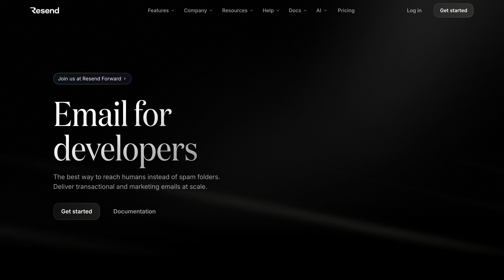
サービス側の準備
- https://resend.com/login で Google SSO ログインする
- 左タブ API keys → Create API Key（権限は Sending access で十分である。Sending domain は All domains を選択する。独自ドメインを追加・DNS 検証しないと、特定ドメイン向けのキーは発行できないためである。名前は各自で決めてよい）


- 発行された API キーを手元にコピーしておく（
.dev.varsへの投入は、次の「実装〜確認」で変数名が決まってから行う）
送信ドメインはどうする？（ここがつまずきやすい）
独自ドメインから送るには DNS 検証（ドメインの所有者であることを DNS レコードの設置で証明する作業）が必要で、それは自分のドメインが決まる公開後の話である。ワークショップでは次の方針を推奨：
- 動作確認は Resend のテスト用アドレス
onboarding@resend.devを From に使う- 「自分宛に届く」を確認するには十分である
- 独自ドメインからの送信は任意（やりたい人だけ、デプロイ後に DNS を設定）
重要: この From はドメイン検証なしで送れるが、宛先は Resend に登録したアカウントのメールアドレス1つだけに限られる。それ以外のアドレスに送ると Resend がエラーを返す。
実装〜確認
- From / To をどうするかも含めて AI に相談して実装する。
あわせて「この機能に要る環境変数を.dev.vars.sampleに追記して」と依頼し、確定した変数名で.dev.vars（backend/直下のローカル用環境変数ファイル。無ければ新規作成）に、サービス側の準備で取得した API キーを入れる（例RESEND_API_KEY=...）。
入れたらnpm run devを（再）起動して、まずローカルで往復させる - 送ったら Resend ダッシュボードの Logs で Status を確認する
- 200 以外が出たら、エラー本文をそのまま AI に渡して直す
- 本番でも使うなら、
RESEND_API_KEYを本番側にも設定してデプロイ（[8][9][10] 共通の手順参照）
✅ 完了の定義
まずローカルで、自分宛にメールが届くこと。そこまで確認できたら、wrangler secret put でシークレットを本番に投入し、npm run deploy して本番でも届けば到達点である。
メール機能実装の作業をコミットして dev ブランチに push して。[9] 決済機能の実装（Stripe）★★★
お題: プラン購入（Stripe Checkout）→ Webhook で購入の証を自動発行
学び: Webhook の扱いで外せない2点
- 二重発行防止: 同じイベントが再送されても、購入の証は1件だけ出す
- 署名検証: 届いた Webhook が本当に Stripe から来たものかを確かめる
Stripe とは
オンライン決済を代行する SaaS である。カード情報は Stripe がホストする決済画面で預かるので、自分のアプリはカード番号を受け取らない。決済が完了したことは Webhook（Stripe から自分のサーバへ送られてくる通知）で知る。
この課題で使う理由は、テストモードがあることにある。本物の課金を発生させずに、購入から購入の証の発行までを何度でも通せる。
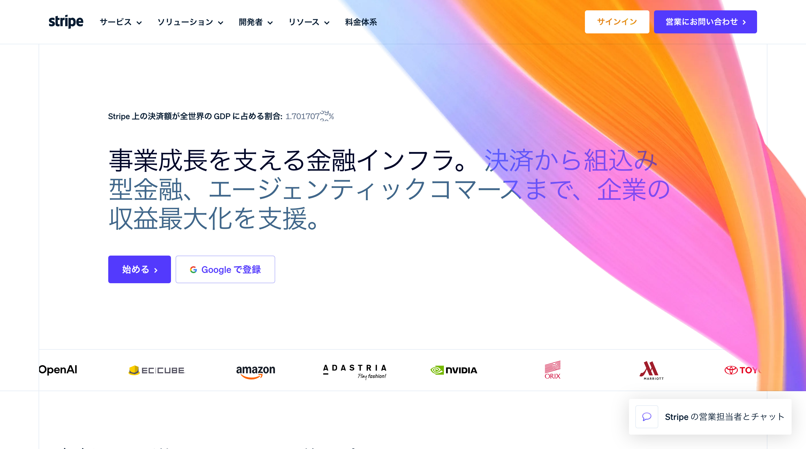
決済まで組み込んだ動くデモ（玄米茶サンプル）: https://testai-payment.ha-toge.workers.dev/
このデモでは、LP の「購入する」から Stripe Checkout（テストカード 4242 4242 4242 4242）を通り、マイページに購入の証が表示されるところまでが動く（Stripe テストモード）。

Section 2 で「自前発行」していた購入の証を、決済イベント起点の自動発行に置き換える課題である。手順が多いので 5 フェーズに分けて進める。
- ① アカウント準備
- ② プラン作成
- ③ ローカル Webhook 検証
- ④ 本番 Webhook 設定
- ⑤ つなぎ込み
① アカウントとキーの準備
- https://dashboard.stripe.com/login で Google SSO ログインする
- サンドボックス（テストモード）はデフォルトで有効である。テストモードとは、本物の課金が発生しない Stripe の練習環境のことである。
ワークショップは終始このモードで進める（[6] の「機能テスト」とは別物である） - 必要な環境変数を AI に聞き、
.dev.vars.sampleに雛形を作る - 検索窓で「API」と検索 →「開発者 > API キー」→ 標準キーのシークレットキー（
sk_test_...）をコピーし、.dev.varsにセットする
① 検索窓で「API」と検索 → 「開発者 > API キー」を選択 
② 標準キーの シークレットキー（ sk_test_...）をクリックしてコピー →.dev.varsにセット - （Stripe CLI が未インストールの場合は前準備 ④ を参照してインストールしてから実行）ターミナルで
stripe loginを実行し、Stripe CLI を自分のアカウントで認証する
② プラン（商品）を作る
商品カタログ → ＋商品を作成で、月額・年額の2つの継続課金プランを作る（プラン名・金額は自分のサービスに合わせて決めてよい。以下は玄米茶サンプルでの例）：
| プラン名（例） | 種別 | 金額（例） | 請求 |
|---|---|---|---|
| 月額プラン | 継続 | ¥300 JPY | 毎月 |
| 年額プラン | 継続 | ¥3000 JPY | 毎年 |


・継続を選ぶ
・金額を入れる（通貨は JPY）
・請求期間は月額プランなら「毎月」、年額プランなら「毎年」
[1] Claude Design や LP の料金セクションで月額・年額以外のプラン（3つ目のプラン等）を追加した場合は、その分だけここでも Stripe の商品を追加で作ること。LP 側の料金プランと Stripe 側の商品は数・内容を一致させる。
- 作成後、各プランの Price ID（
price_...）を控える- 下の図の手順のとおり、ワークベンチ（Stripe の開発者向け管理画面）のデータマップ（オブジェクトの関連図）から取得する。Checkout に渡すのはこの Price ID である
- （
prod_...は商品そのものの ID である。コードで使うのはprice_...の方）

① 商品カタログで該当のプランを選択したのちに、下部の prod_...をクリック → ワークベンチが開く
② ワークベンチのデータマップで Product（prod_...）配下のPrice（price_...）を確認 - 2つの Price ID を
.dev.varsにセット（例PRICE_MONTHLY=price_.../PRICE_YEARLY=price_...） - 実装: 「Checkout セッションを作成する API エンドポイントと購入の証の発行ロジックを実装して」と Claude Code に依頼する
③ ローカルで Webhook を検証する
前提: ② の実装（AI への依頼）が完了してから進む。未完了の場合は先に「Checkout セッションを作成する API エンドポイントと Webhook 受信エンドポイントを実装して」と AI に依頼する。
ローカル環境では Stripe から直接 Webhook が届かない（インターネットに公開されていないため）。Stripe CLI の
stripe listenを使って、Stripe のイベントを手元のバックエンド（npm run devの出力に表示されているポート）に転送する必要がある。ターミナルを2つ使う。バックエンド（
npm run dev）を起動したまま、別ターミナルでstripe listenを動かす。
- 別ターミナルで Stripe CLI の
listenを実行する（転送先は、実際にバックエンドが起動しているポートに置き換える）:stripe listen --forward-to localhost:<バックエンドのポート>/webhook/stripe - listen 開始時に表示される Webhook 署名シークレット（
whsec_...）を.dev.varsにセット（例:STRIPE_WEBHOOK_SECRET=whsec_...）してnpm run devを再起動（stripe listenは止めなくてよい。バックエンドのターミナルだけ Ctrl+C → 再起動） - テストカードで購入して、購入 → Webhook 受信 → 購入の証の発行までローカルで通す
- テストカード番号は
4242 4242 4242 4242（有効期限＝未来の任意の日付／CVC＝任意の3桁） - テストモードのため実際の課金は行われない。ただし本物のカード番号は受け付けられずエラーになるため、必ず上記のテストカード
4242 4242 4242 4242を使う
- テストカード番号は
④ 本番（デプロイ後）に Webhook を設定する
ここでの「本番」はデプロイ後の公開環境を指す。Stripe を live mode（本物の課金）に切り替えるわけではなく、③と④のどちらも終始テストモードのままである。
③と④で署名シークレットが別物になるのは、Webhook の転送先 URL が違うためである。
- デプロイ前に、ローカルの
.dev.varsに入れた値（Secret key・Price ID など）を本番側にも設定しておく（wrangler secret put/ ダッシュボード）。※ Webhook 署名シークレットだけは本番用を後から（手順6）入れる - 本編 [7] の手順で Cloudflare にデプロイする
- Stripe ダッシュボードの検索窓で「Webhook を作成」を検索して進む
checkout.session.completedは必須で選ぶ（他に必要なイベントは AI に聞いて選ぶ）- エンドポイント URL に、自分の Worker の Webhook 受信 URL（パスまで含めた URL）（例
https://<name>.workers.dev/webhook/stripe）を入力する - 作成後に表示される本番用の署名シークレットを取得 → Cloudflare の環境変数に投入（ダッシュボードなら Secret タイプで。共通の秘密情報の置き場所参照）
- 本番で決済を確認する


checkout.session.completed は必須で選ぶ（他に必要なイベントは AI に聞いて選ぶ）
https://<name>.workers.dev/webhook/stripe を入力して「続行」⑤ 購入後の戻り先とマイページ表示（つなぎ込み）
- Checkout には決済後の戻り先 URL（
success_url/cancel_url）が要る。成功時は Section 2 で作った/successページにつなぐ（AI に「購入後/successに戻して」と頼めばよい） - 「マイページに購入の証が出る」ための紐付けに注意:
- Webhook で発行した購入の証は購入者の emailに紐づく。マイページはログイン中ユーザーの email で証を引く
- [10] Clerk をやらない場合は、Section 2 のモック認証の email（ヘッダ
x-user-email）と購入時の email を一致させること。ここがズレると「購入したのにマイページに出ない（別人扱い）」になる。
具体的には、フロントのリクエストヘッダX-User-Emailに固定値（例:test@example.com）をセットし、Stripe Checkout のcustomer_emailにも同じ値を渡せば一致する
⚠️ ハマりどころ
- 署名シークレットはローカル（③）と本番（④）で別物である（転送先 URL が違うため。Stripe をテストモードから切り替えるわけではない）。混同しない
- 署名検証は実装の細部（「生のリクエストボディ」で検証する等）でつまずきやすい。自分でコードを追わず、「Stripe の署名検証が公式推奨の方法（生のリクエストボディでの検証）で実装されているか確認して」と AI に点検させる
- 二重発行防止: Stripe は同じイベントを複数回送ってくることがある。同じ購入イベントが2回届いても購入の証を1件だけ発行するように実装する（処理済みのイベント ID を記録して、既に処理済みなら無視する）
- email の不一致で「マイページに出ない」が起きやすい（上記の紐付けを参照）
✅ 完了の定義
まずローカルで、テストカードで購入 → マイページに購入の証が表示されること。そこまで確認できたら、wrangler secret put でシークレットを本番に投入し、npm run deploy して本番でも通れば到達点である。余裕があれば二重発行防止まで確認する。
決済機能実装の作業をコミットして dev ブランチに push して。[10] ID 連携機能の実装（Clerk）★★☆
お題: ログイン必須のマイページ（未ログイン → サインインへリダイレクト）
使うもの: @clerk/clerk-react（フロント）＋ Hono 側で Clerk の認証トークンを検証
Clerk とは
ログインの仕組みをまるごと引き受ける SaaS である。サインイン画面、Google などの外部アカウントとの連携、セッションの管理を用意してくれる。自分で書くのは、届いたトークンを検証する部分だけになる。
このトークンは JWT（JSON Web Token）と呼ばれ、ログイン済みであることを証明する。検証すれば、そのリクエストが本当にログイン済み本人からのものかを確かめられる。
この課題で使う理由は、認証を自作するとパスワードの保存やセッションの失効で間違えやすく、その間違いがそのまま脆弱性になることにある。
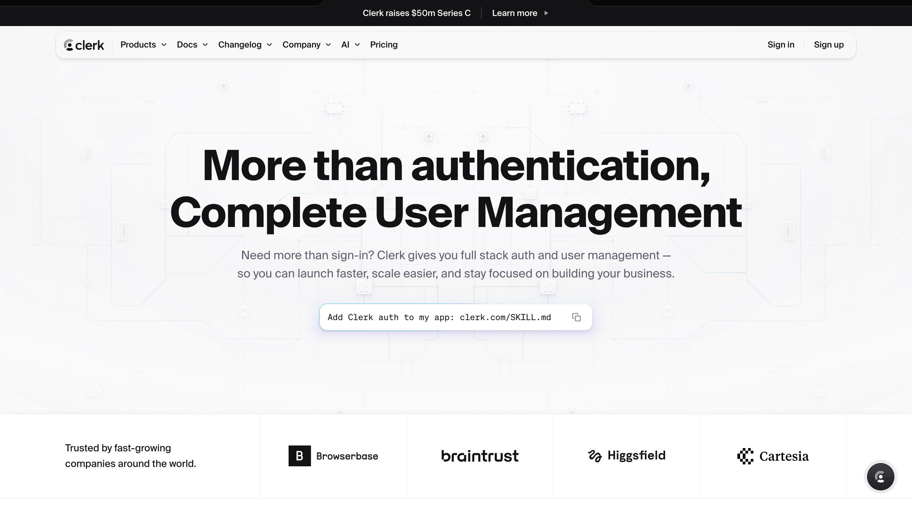
ログイン（Clerk）まで組み込んだ動くデモ（玄米茶サンプル）: https://testai-login.ha-toge.workers.dev/
このデモでは、未ログインで /mypage を開くとサインイン画面へリダイレクトされ、Google でログインするとマイページが表示される、というところまでが動く（Clerk 開発モード）。
Section 2 でモック認証にしておいた API を、本物の Clerk 認証に差し替える課題である。Claude Code に『Section 2 のモック認証を Clerk トークン検証に差し替えて』と指示するだけで進められる。

サービス側の準備
- https://dashboard.clerk.com/ で Google SSO ログインする
- アプリケーションを作成する。作成画面で Application name と Sign in options（サインイン方法）をその場で選べる。
ここで Email・Phone number・Username をオフ、Google をオンにする（メール認証は使わず Google SSO のみにする）。設定できたら、右側のプレビューが「Continue with Google」だけになっているか確認する。
なおApplication name もサインイン方法も、ダッシュボードから後でいつでも変更できるので、作成後に直しても構わない。
- Configure → Instance → API keys から2つのキーを手元にコピーしておく。ただし env への投入は、次の「実装メモ」で AI にパッケージを導入させたあとに行う。
変数名は@clerk/*の規約で下表のとおりに固定されている。そして2つのキーで置き場所が違うのがポイントで、ここを間違えやすい。キー 置き場所 性質 Publishable key フロントの env（Vite なら frontend/.envにVITE_CLERK_PUBLISHABLE_KEY=...）。加えてバックエンドのbackend/.dev.varsにも同じ値をCLERK_PUBLISHABLE_KEY=...で置く（@hono/clerk-authがバックエンド側でもこのキーを要求するため。本番も同様に投入）公開してよい Secret key ローカル: バックエンドの backend/.dev.vars/ 本番: Cloudflare ダッシュボードの環境変数（Secret タイプ）またはwrangler secret put CLERK_SECRET_KEY秘密。漏らさない 
実装メモ
- 必要なパッケージ（フロント
@clerk/clerk-react／ バックエンド@hono/clerk-auth）も AI が導入してくれる。導入できたら、サービス側の準備でコピーした2つのキーを上表のとおり env にセットしてnpm run devを（再）起動する - JWT 検証は
@hono/clerk-authが推奨（バックエンドでのトークン検証が一気に楽になる） - バックエンドは必ずトークンを検証してから保護 API を返す（フロントの出し分けだけでは保護にならない）
- Section 2 のモック認証（ヘッダ
x-user-emailを信頼）を、この Clerk トークン検証に差し替えるのがゴール
Clerk ダッシュボード自体への管理者ログインは Google SSO で行う（手順1〜3）。参加者が自分のアプリにサインインする際も、上記の設定（メール認証オフ・Google SSO オン）が適用されるので Google アカウントでサインインする。
⚠️ ハマりどころ
- 本番（デプロイ後）でサインインが弾かれるときは、Clerk ダッシュボードに公開ドメイン（
https://<name>.workers.dev）を許可オリジンとして登録する
✅ 完了の定義
以下をすべて満たしたら完了:
- ローカル確認: 未ログインで
/mypageを開くとサインイン画面に誘導される（入れない） - ローカル確認: 未ログイン状態で
GET /api/meを叩くと 401（未認証＝「ログインしていないので拒否した」という HTTP ステータス）が返る（AI に「未ログインで /api/me を叩いて 401 になるか確認して」と依頼すればよい）。サインイン後は/mypageに自分の情報が表示される - 本番への環境変数の投入:
backend/.dev.varsに書いたCLERK_SECRET_KEYとCLERK_PUBLISHABLE_KEYの両方をwrangler secret putで本番側に投入する（上の「置き場所を分ける」表を参照）- Publishable key は公開してよい値だが、
@hono/clerk-authがバックエンド側で要求するので、本番の Worker にも入れないとトークン検証が動かない - フロント側の
VITE_CLERK_PUBLISHABLE_KEY（frontend/.envの方）は、ビルド時に埋め込まれるため wrangler への投入は不要。npm run deployのビルドで自動反映される
- Publishable key は公開してよい値だが、
- 本番確認:
npm run deploy後、本番 URL（https://<name>.workers.dev）でサインイン →/mypageが表示される- サインインが弾かれる場合は、上の⚠️ハマりどころにある許可オリジンの登録を行う
Clerk 認証実装の作業をコミットして dev ブランチに push して。[11] セキュリティレビュー★★☆
お題: 自分のアプリをセキュリティ観点で点検し、最低1つ直す
ツール: Claude Code（/code-review・/security-review・常時の security-guidance）＋ SonarCloud
参考: [6] で作った docs/TEST.md の認証境界まわりのテスト。これを回帰テスト（直した問題が再発していないかを毎回確かめるテスト）の土台にする
学び: 「AI が書いたコード」を自分で点検できるようになる
見る観点
- 認証境界（ログインなしで入れる範囲と、ログイン必須の範囲の境目）: 未認証／偽造 JWT で 401 になるか
- IDOR（Insecure Direct Object Reference：権限のない他人のデータを横断参照できてしまう脆弱性）: 他人の email を body に入れても無視されるか（他人のデータを引けないか）
- 過剰な情報の返却: API レスポンスに、その画面で見せる必要のない情報まで載っていないか（内部の顧客 ID、他人の集計値、テーブルの行をそのまま返している等）
2通りの点検を併用する
- Claude Code（
/code-review・/security-review・security-guidanceの基本は [5] レビューにまとめてある。ここではセキュリティ点検に実際に使う）/security-reviewで差分・コードを点検させる（実行例は [5] レビューにある）- 事前に
security-guidanceを入れていれば、編集・コミットのたびに自動で点検されている（Claude Code セキュリティ対策参照）
- SonarCloud（静的解析）
SonarCloud は、静的解析（コードを実際に動かさずに、書かれた内容を読むだけで問題を見つける手法）を GitHub と連携して行う SaaS である。コードを push するたびにセキュリティ脆弱性・バグ・コード品質の問題を自動検出し、Claude Code の差分レビューでは気づきにくいパターンを補完する。
初回のアカウント作成〜組織作成は手順が多いので、以下は実際の画面ひとつずつに沿って説明する。
- 点検対象を
mainブランチに push（SonarCloud はmain/ PR を解析）
- https://sonarcloud.io にアクセスし、ログイン画面で 「GitHub」 を選ぶ
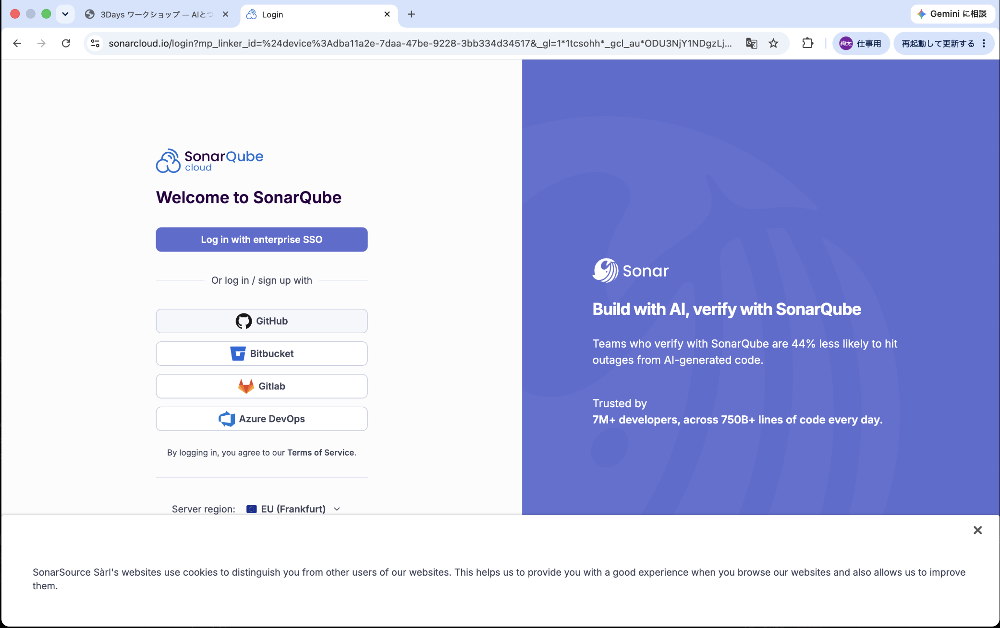
- GitHub 側の確認画面で 「Authorize」 をクリックし、SonarQubeCloud に GitHub アカウントの参照を許可する（ここはまだ本人確認だけで、リポジトリへのアクセス許可は次の手順）
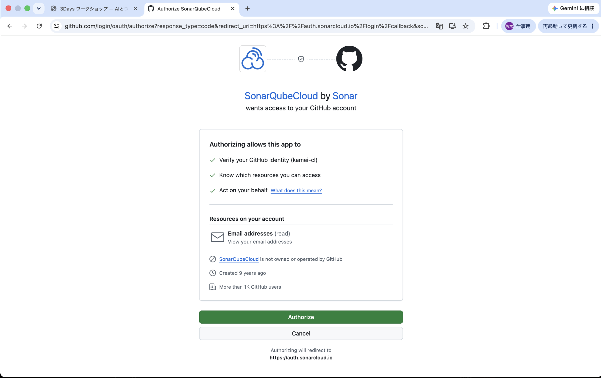
- 初回は SonarCloud の 「Welcome」画面が表示されるので 「Get started with GitHub」 をクリックする
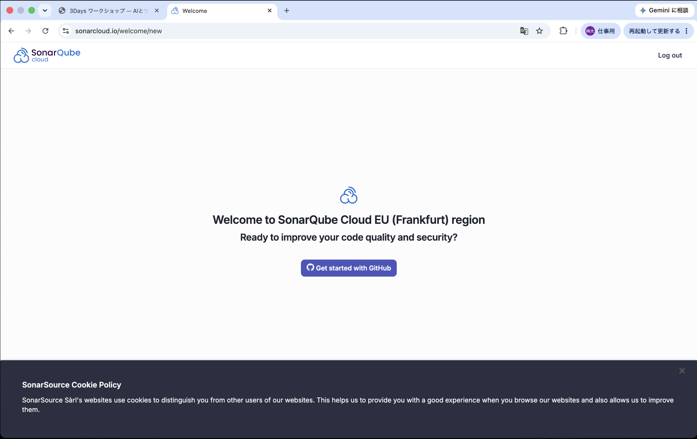
- 再び GitHub 側の画面に移り 「Install & Authorize SonarQubeCloud」が表示される。「Only select repositories」を選び、点検したいリポジトリだけにチェックを入れてから 「Install & Authorize」 をクリックする
⚠️ ここが一番の要注意ポイントである。「All repositories」を選ぶと、プライベートリポジトリのコードが SonarCloud に見えるようになる（詳細は下記ハマりどころ）。
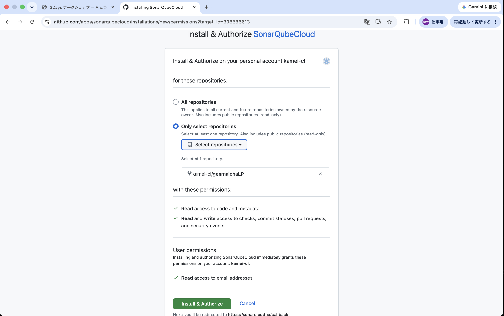
- SonarCloud に戻ると 「Create an organization」画面が表示される。
- Name・Key を入力する。どちらも秘密情報ではないので、GitHub のアカウント名をそのまま使ってよい
- 「Automatically import new GitHub repositories」はチェックしない。チェックすると新規リポジトリが自動で解析対象に追加されてしまう（下記ハマりどころ参照）
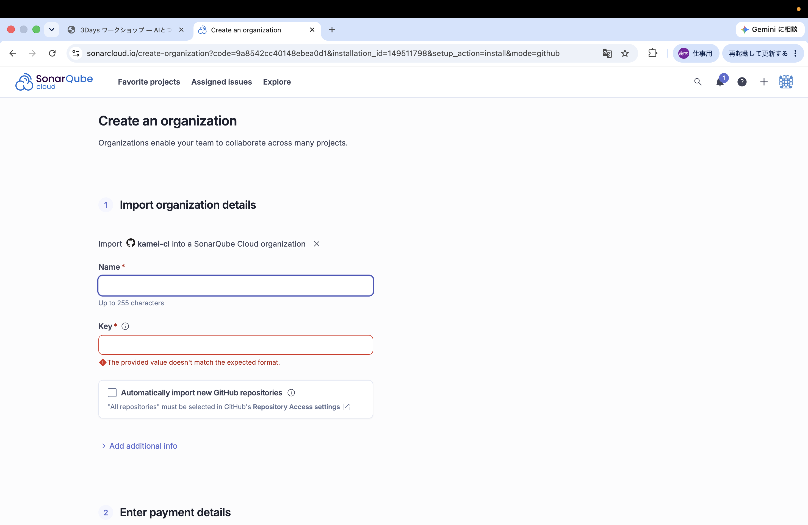
- 下にスクロールすると 「Enter payment details」でプランを選ぶ画面が続く。個人の小さな MVP なら無料枠で十分なので 「Free」（$0）を選ぶ（カード情報の入力は不要）
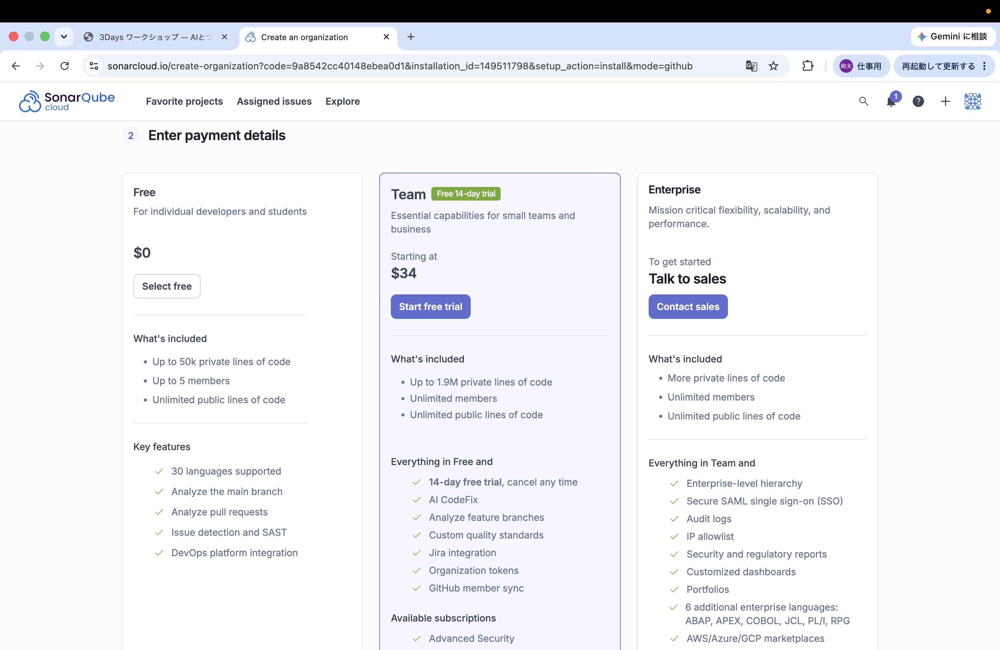
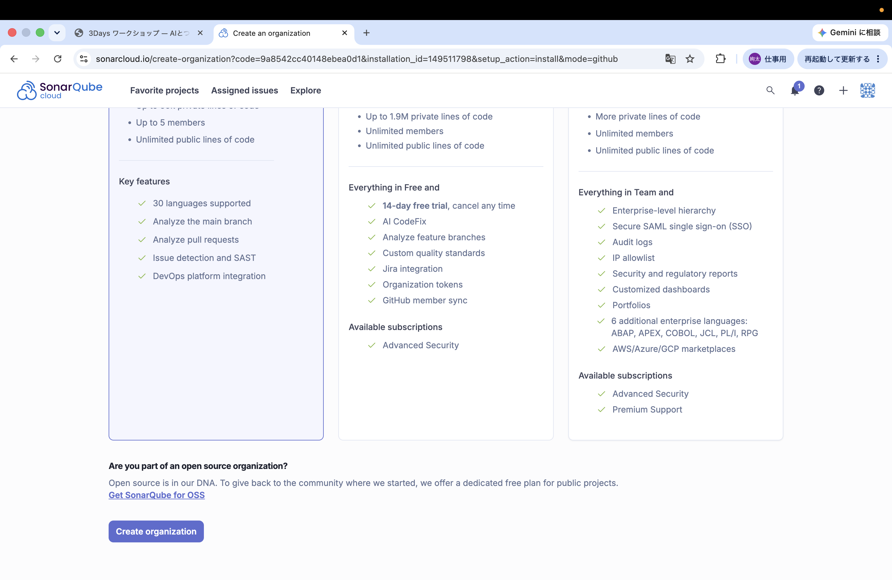
- 「Create organization」をクリックすると組織が作成され、Projects 画面に移る（最初は「No projects here yet」と表示される）
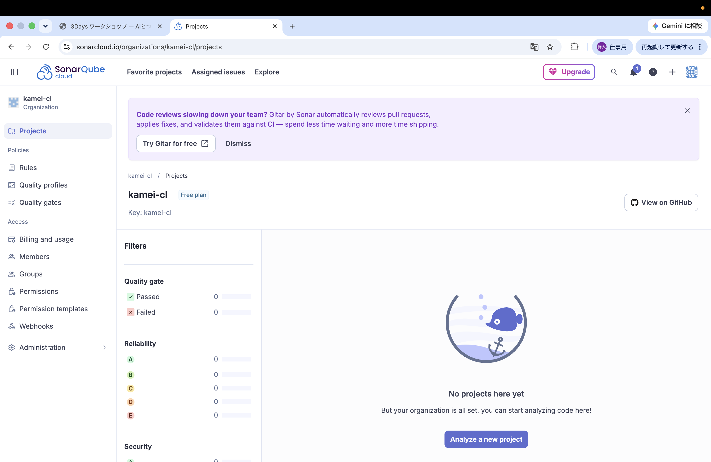
- 右上の ＋ → Analyze new project（前の画面の「Analyze a new project」ボタンからでも同じ画面に進める）
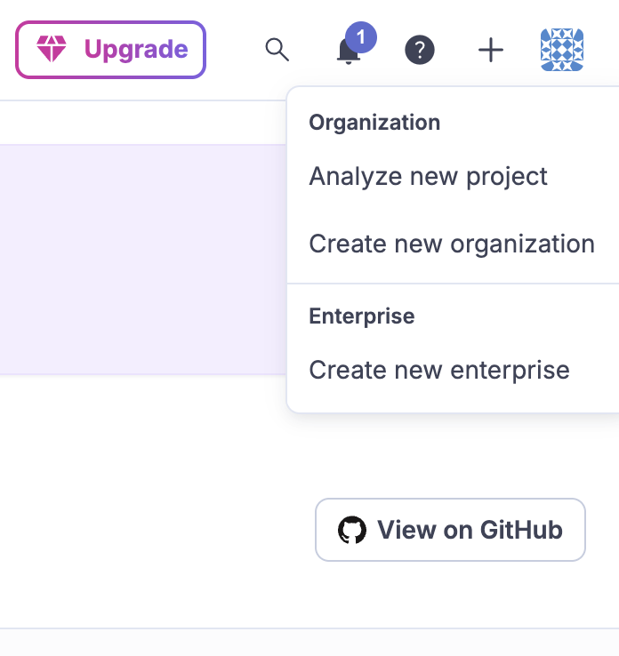
- 「Analyze projects」画面で Organization を確認し、点検したいリポジトリにチェックを入れて「Set Up」をクリックする
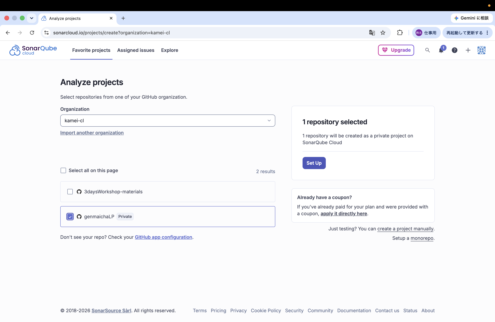
- 「Project onboarding」画面に切り替わり解析が自動で始まる。「We are analyzing your project」と表示されている間はそのまま少し待つ（数十秒〜数分程度）
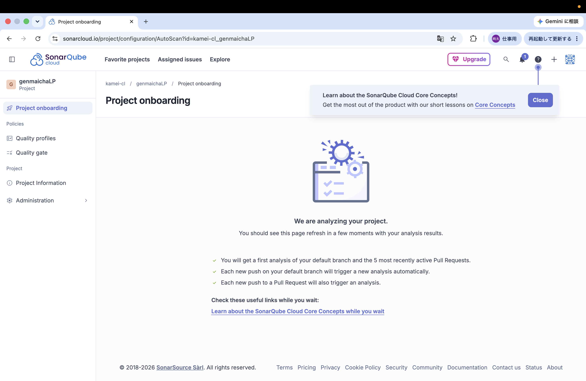
- 解析が完了すると 「Summary」画面に切り替わり、Quality Gate（あらかじめ決めた品質基準を満たしているかを合否判定する仕組み）や項目ごとの指摘件数が表示される。表示される項目の意味は次のとおり（下図はあくまで一例の件数）:
- Security（脆弱性）: 0 Open issues／評価 A（A が最良〜E が要改善の5段階）
- Reliability（バグの可能性がある箇所）: 16 Open issues／評価 E
- Maintainability（保守性・コードの読みやすさに関する指摘＝コードスメル）: 23 Open issues／評価 A
- Coverage（テストカバレッジ）: 0.0%（別途設定しないと計測されない項目のため、今は未計測というだけ）
- Duplications（重複コードの割合）: 0.0%
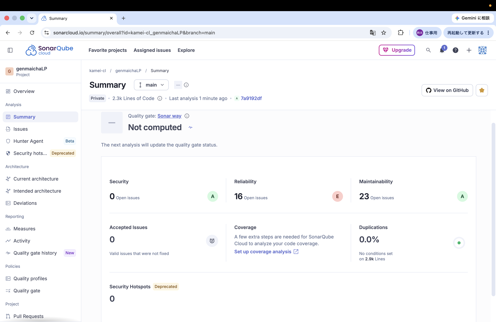
- 点検対象を
指摘の中身を見て、AI と一緒にレビューする
Summary 画面の数字はあくまで件数の集計である。個別の指摘を開いて中身を見るのがレビューの本番である。
- 左サイドバーの 「Issues」をクリックするか、
Summary画面の指摘件数（例: 「16 Open issues」）を直接クリックすると、個別の指摘一覧に移る。- 左側の「Filters」で Software quality（Security / Reliability / Maintainability）ごとの内訳が確認できる
- Severity でも絞れる。Blocker〜Info の5段階の緊急度で、Blocker が最も重大、Info が参考程度である
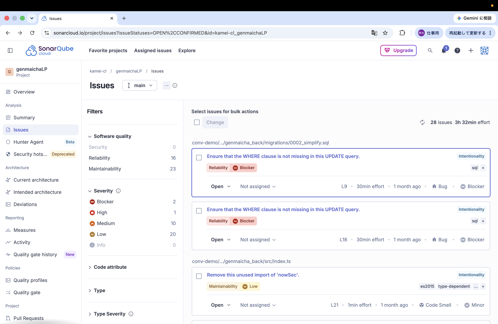
- 一覧から1件クリックすると、右側に 該当コードと SonarCloud による説明が表示される。上部に指摘内容・影響する Software quality・重大度（Blocker など）、下部のタブに切り替えると「Where is the issue?」（該当コード）・「Why is this an issue?」（理由の説明）が見られる
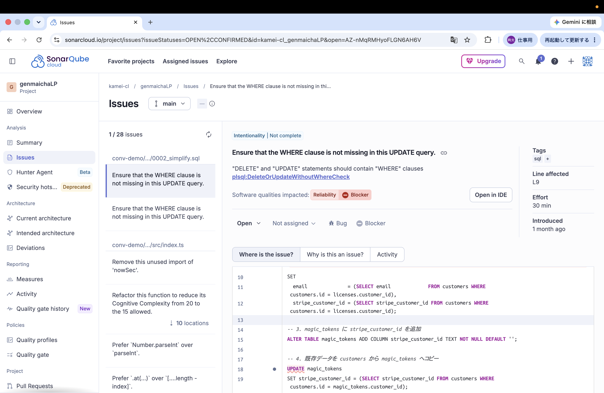
- その内容を Claude Code に見せる。下図のように詳細画面の6箇所（①〜⑥）に印を付けた。プロンプトのひな形に埋めるのは ①〜⑤ である（⑥ は補足で、必要なときだけ使う）:
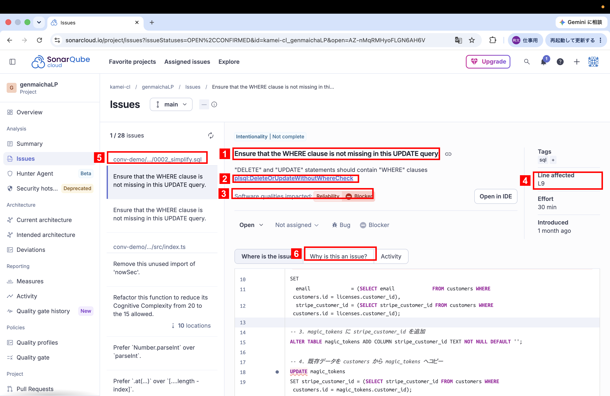
①〜⑤をそのままコピーして埋めて送る:
SonarCloudで以下の指摘が出ました。意味と直し方を教えてください。 ルール名: ①をここに ルールID: ②をここに Software quality / 重大度: ③をここに 行番号: ④をここに ファイルパス: ⑤をここにClaude Code はリポジトリのコードを直接読めるので、この5項目さえ伝われば該当箇所を実際に開いて「なぜ指摘されたか」「どう直すべきか」を具体的に説明できる。
もう少し文脈を足したいときは、上図⑥の「Why is this an issue?」タブを開き、その説明文もあわせて伝えるとよい。「Where is the issue?」の右隣にある。
このタブには SonarCloud 独自の解説と、Noncompliant／Compliant のコード例が載っている。長くなりがちで1回のスクショに収まらないので、範囲選択してそのままコピー&ペーストする方が確実である。見切れる心配がない。
多くのルールは同じ構成（説明文 → Noncompliant code example → Compliant solution）で、今回の指摘ならこうなる:
UPDATE and DELETE statements should contain WHERE clauses to keep the modification of records under control. Otherwise unexpected data loss could result. Noncompliant code example DECLARE maxAge PLS_INTEGER := 60; BEGIN UPDATE employee SET status = 'retired'; -- Noncompliant - the WHERE was forgotten END; / Compliant solution DECLARE maxAge PLS_INTEGER := 60; BEGIN UPDATE employee SET status = 'retired' WHERE age > maxAge; END; / - 説明を踏まえて直すか・誤検知として無視するかを判断する（鵜呑みにしない。下記ハマりどころ参照）
Security の指摘が 0 件でも異常ではない。認証境界・IDOR・過剰な情報の返却などの典型的な穴が既に塞がれていれば Security 分類の指摘は出ない。[11] の完了条件（1つ以上修正）は、Reliability・Maintainability の指摘から選んでも構わない。
⚠️ ハマりどころ
- SonarCloud の指摘には誤検知（false positive）もある。鵜呑みにせず AI と判断する
- 解析対象を絞りたいので、このワークショップ用のリポジトリだけを対象にするのが推奨（Git ブランチ参照）
- 意図しないリポジトリまで勝手に解析されることがある。原因は2つの組み合わせ:
- SonarCloud の GitHub App を
All repositories（全リポジトリ）で許可している - SonarCloud の Organization で新規リポジトリの自動取り込み（Automatic Analysis / auto-provisioning）が有効になっている
この2つがそろうと、App から見えるすべてのリポジトリで、push のたびに SonarCloud が自動でプロジェクトを生成して解析する。プライベートリポジトリが含まれる場合はコードが外部に送られる。そのため
All repositoriesは選ばない。誤って All repositories を選んでしまった場合は、次のどちらかで対処する。
- 入口は https://github.com/settings/installations（メニューからたどるなら GitHub → Settings → Integrations → Applications → SonarCloud → Configure）。そこで
Only select repositoriesに変更して対象を絞る - 個別プロジェクトだけ止めたいなら、SonarCloud の対象プロジェクト → Administration → Analysis Method の「Automatic Analysis」を OFF、または Administration → Deletion で削除
- SonarCloud の GitHub App を
✅ 完了の定義
見つけた問題を 1つ以上修正できれば完了である。
セキュリティ修正の作業をコミットして main ブランチに push して。[12] E2E テスト（画面を通して確かめる）★★★
お題: [6] ② の表から2本を選び、ブラウザ操作のテストにする
ツール: Playwright（Codegen）＋ Claude Code
学び:AI が作ったものを鵜呑みにせず、画面を通して自分で確かめられるようになる。決めたことが守られているかを見て、まだ決めていなかったことをその場で見つけて決める
E2E テストの考え方
E2E（End to End）テストとは、本物のブラウザでアプリを操作し、画面から DB までを通して確かめるテストである。[6] のテストが部品を1つずつ台の上で検査するのに対して、E2E は組み上がったものに実際に乗ってみる。
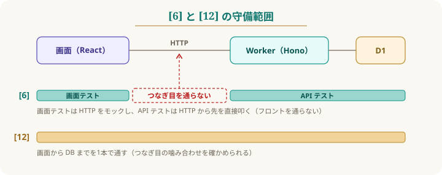
[6] は経路の左半分と右半分を別々に固める（画面テストは HTTP をモック、API テストは外部 API をモック）。どちらのテストも自分の側の想定でモックを書くため、たとえばバックエンドが返すデータの項目名とフロントが読み取る項目名が食い違っていても、両方とも緑になる。実際に通信させて初めて、食い違いは「画面が空欄」のような形で現れる。この噛み合わせを確かめるのが E2E である。
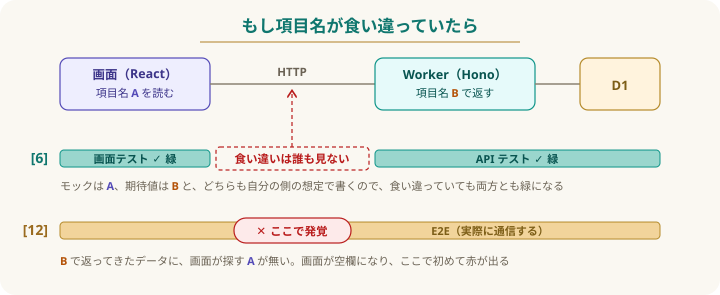
E2E は [6] の置き換えではなく補完である。通して初めて破れが見える行だけをこの章で書き、それ以外の行は [6] の関数・API・画面のテストが引き取る。
[6] と [12] の守備範囲の違いを、実際に起きうるバグで見る
| 実際に起きうるバグ | [6] のテスト | [12] の E2E |
|---|---|---|
| フロントが項目名を綴り間違えて画面が空欄 | 見逃す | 気づける |
npm run build:front を忘れて古い画面が配信されている | 見逃す | 気づける |
| 他人のメールで開いたとき前の人の購入の証が画面に残る | 見逃す | 気づける |
| 画面に導線が無い API を直接叩くと、他人の購入の証が返る | 気づける（T-005 のように API を直接叩ける） | 見逃す（画面から辿れる操作しか書けない） |
| DB に保存された中身が壊れている（画面には表示されない） | 気づける（T-003 のように DB を直接見られる） | 見逃す（E2E が見るのは画面だけ） |
Playwright とは
この E2E テストに使うのが Playwright である。ブラウザを実際に動かしてアプリを操作するテストツールで、付属の Codegen を使うと、自分が画面でやった操作がそのままテストコードとして書き出される。そのため、テストの書き始めでつまずかない。
流れ
| 工程 | やること |
|---|---|
| ⓪ 準備 | Playwright を入れ、テスト対象のアプリを起動しておく |
| ① テストする行を2本決める | [6] ② の表から、ブラウザで確かめる行を選ぶ |
| ② 操作を録画する | Codegen で画面を操作し、操作をコードとして書き出す |
| ③ 検証を足して実行する | 録画したファイルに「期待結果どおりか」を判定する行を AI に足させ、実行して結果を表に書く |
| ④ 赤の原因を決める | 実装・テスト・決めていなかった仕様のどれが原因かを切り分ける（赤が出たときだけ） |
| ⑤ push する | 実行結果の生成物を除いてコミット・push する |
② と ③ が2段に分かれているのは、Codegen が書き出すのは操作の行だけで、判定（expect）を1行も書かないためである。かといって最初から AI にテストを丸ごと書かせると、AI は実装を読んで今の動きをバグごと正解にする。そこで、操作の骨格は録画で固定し、判定だけを [6] ② の表を根拠に AI に足させる。
このうち自分で考えるのは ① の行の選択、③ の検証の確認、④ の赤の判断である。ほかは Codegen と AI が進める。
「何をテストするか」は [6] ② で決めてある。この章はそれを Playwright で実行に移す工程なので、決め直さない。
⚠️ [9] 決済 / [10] ID 連携 を実施済みの人は、⓪ 準備の前にここを読む
[10] を入れるとログインが Google の画面に移る。Playwright は Google のログイン画面を自動操作できないので、そのままでは認証が要る画面のテストが1本も書けない。
解決策は @clerk/testing である。ログイン画面を通らずに認証済みの状態を作る。
npm i -D @clerk/testing1. テスト用ユーザを1人作る — Clerk ダッシュボードで作る。手順は4ステップである。
(1) メール認証を一時的に有効化する — Configure → User & authentication → Email。Google ログインしか有効にしていないと、次の画面でメール欄が使えない。「Sign-up with email」「Sign-in with email」を ON にして Save。
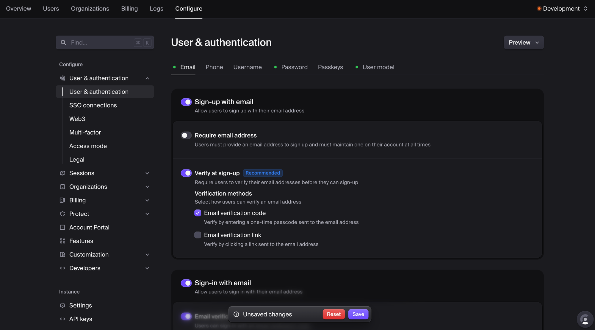
(2) Users タブで Create user を押す
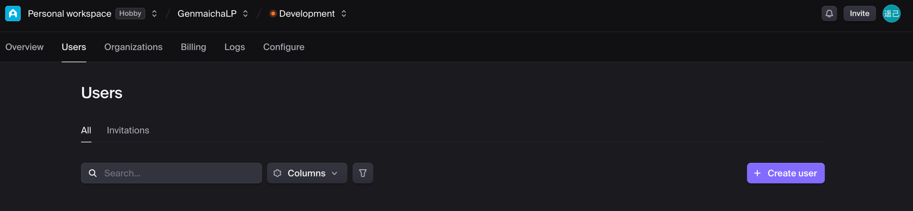
(3) メールとパスワードを入れて作る
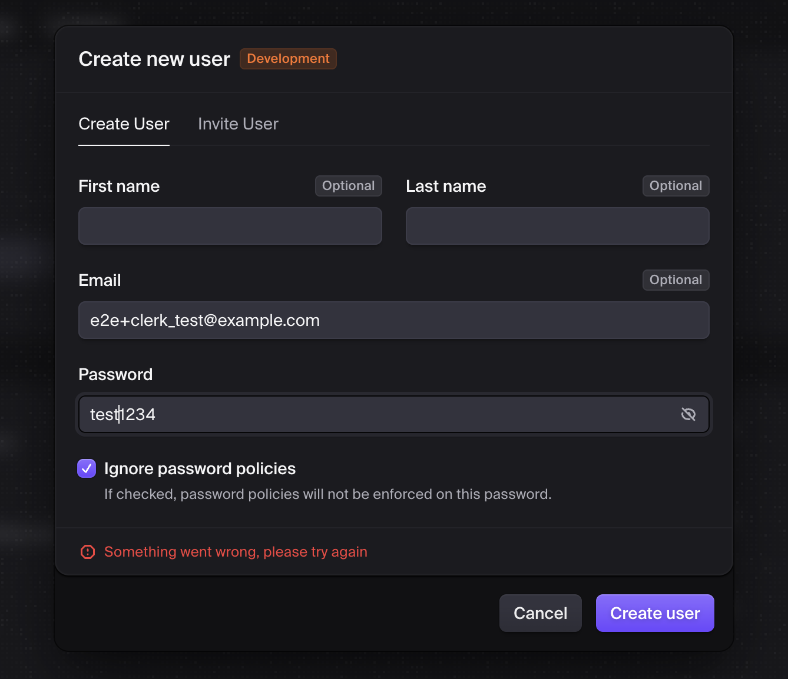
+clerk_test 付きにする。パスワードはこの場だけで以降使わない- メールは
e2e+clerk_test@example.comのように+clerk_testを付ける。付けないと「Enter a valid email address」で弾かれる - パスワードは任意である。通らなければ Ignore password policies にチェックを入れる。このパスワードは以降使わない（テストはログイン画面を通らないため）ので、どこにも保存しなくてよい
(4) メール認証を元に戻す — 同じ画面で両方 OFF にして Save。
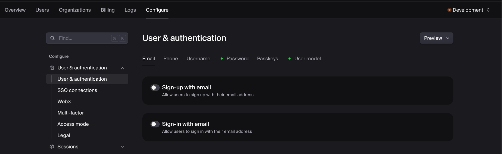
2. 設定は AI に作らせる
@clerk/testing を使って、Playwright のテストを Clerk 認証済みの状態で走らせたい。
・テスト用ユーザのメールは環境変数 E2E_CLERK_USER_EMAIL から読む
・サインイン画面は操作しないこと（Google ログインなので自動操作できない）
・アプリの認証方式をあとから変えても壊れないようにすること
・認証状態は毎回のテスト実行時に作り直すこと
・認証状態のファイルは Git に入れないこと下3行が効いている。「サインイン画面を操作しない」でログイン画面を通らない方式に、「認証方式を変えても壊れない」でパスワードや確認コードに依存しない方式に、「毎回作り直す」で期限切れしない作りに寄る。ファイル構成は指定しなくてよい。
3. 認証状態を作る — 環境変数を渡して実行する。
set -a; . ./backend/.dev.vars; set +a
export E2E_CLERK_USER_EMAIL='e2e+clerk_test@example.com'
npx playwright test --project=setupこれが緑になれば設定は正しい。ログイン画面を操作するコードが混ざっていれば、ここで止まる。
4. ② 操作の録画はこう起動する — 開いた瞬間からログイン済みになる。サインイン画面は出ない。
npx playwright codegen --load-storage=playwright/.clerk/user.json \
-o tests/01-xxx.spec.ts http://localhost:8787/mypage保存先のファイルは .gitignore に入れる（/playwright/.clerk/）。
⚠️ 手動でログインして
--save-storageに保存する方法は取らないこと。Google の画面を通るため、保存されるファイルに自分の Google アカウントのセッションが丸ごと入る。
.google.comや.youtube.comのクッキーが数十個まとめて書き出される。漏れたときの被害はアプリのアカウントではなく Google アカウントの乗っ取りである。しかも数日で期限切れになり、アプリが壊れていないのにテストが赤くなる。
上の方法なら保存されるのはこのアプリと Clerk のクッキーだけで、Google のものは入らない。
[9] 決済（Stripe）も実施済みの場合: 行の選び方は ① に書いた。ここで用意しておくのは購入済みのアカウントで、上の --load-storage で開いたブラウザから1回だけ手で購入すればよい（テストカード 4242 4242 4242 4242）。
| 保証項目 | [9][10] 実施前 | 実施後 |
|---|---|---|
| 他人のデータが見えない | ⭕ 別のメールを打つだけ | ⭕ テスト用ユーザをもう1人作れば書ける |
| 購入操作そのものが正しい | ⭕ 画面内で完結 | ✕ Stripe の決済画面を通る |
| 購入後の表示が正しい | ⭕ | ⭕ 前提を「購入済み」に置けば書ける |
| 未ログインで中身が見えない | ⭕ メール入力フォームが出るだけ | ⭕ サインイン画面への遷移として書ける |
⓪ 準備
やること: リポジトリのルートで Playwright を入れる。
npm init playwright@latest -- --browser=chromium実行するといくつか質問が出る（言語・テストの置き場所・GitHub Actions を作るか）。すべてそのまま Enter でよい。
⚠️
-- --browser=chromiumを省略しないこと。省略すると Chromium 以外に Firefox と WebKit（Safari のエンジン）もダウンロードされる。数分待たされたうえ、以降のテストの実行時間も3倍になる。
別のターミナルでアプリを起動しておく。作業中はずっと立ち上げたままにする。
cd backend && npm run build:front && npm run dev生成された playwright.config.ts の use: に1行足す。ポートは npm run dev の出力に表示されたものに合わせる（既定は 8787 だが、使用中なら別のポートが割り当てられる）。以降このページに出てくる 8787 も、自分の環境のポートに読み替えること。
use: { baseURL: 'http://localhost:8787' },完了: ブラウザで npm run dev が表示した URL が開き、購入もマイページも動く。
① テストする行を2本決める
やること: [6] ② の「## テスト項目」の表から、ブラウザで確かめる行を2本選ぶ。選んだ行の番号は、② で作る録画ファイルの名前になる。
「どこで確かめる」が「通し」の行があれば、それを使う。前提条件と期待結果は [6] ② で埋めてあるので、そのまま使える。選ばなかった行は結果列を「[12] で確認予定」のままにしておき、時間が余ったら足す。
通しの行が無い場合は、ここで2本作る。[6] ① の「## テスト要件」から、画面から DB まで通して初めて破れが見えるものを2つ選び、表に「通し」の行を足す。前提条件と期待結果は、同じ要件の「画面」の行を見れば書ける。足した行の結果列には「[12] で確認予定」と書いておく（③ の実行で上書きする）。
⚠️ [9][10] を実施した人へ: Google のログイン画面と Stripe の決済画面を通る行は、そのままでは選べない。
Playwright はこの2つの画面を自動操作できない。候補の行がどれに当たるかで、扱いを決める。
候補の行 この2本に選べるか ログインした先の画面を確かめる行（[10]） 選べる。⓪ 準備の前の折りたたみの @clerk/testingを使うと、ログイン画面を通らず認証済みの状態から録画できる購入したあとの表示を確かめる行（[9]） 前提条件を「購入済みのアカウント」に書き換えれば選べる。購入操作は録画に含めず、購入済みの状態から始める Stripe の決済画面の中の操作そのものを確かめる行（[9]） 選ばない。結果列に「決済画面の内側なので E2E 対象外。Stripe の設定として確認する」と書く。決済画面の中の不具合は Stripe 側の設定に由来し、直す先が自分のリポジトリに無い
完了: 表の行を2つ選べていて、それぞれ前提条件と期待結果が埋まっている。
② 操作を録画する
やること: ① で選んだ2行それぞれについて、1回ずつ録画する。必ずリポジトリのルートで実行する。
cd <リポジトリのルート>
npx playwright codegen http://localhost:8787/ -o tests/<ファイル名>.spec.ts末尾のファイル名は自分で決める。① で2本選んだので、名前も2つ要る。
名前の付け方: tests/<表の番号>-<何を守るか分かる短い名前>.spec.ts
名前の例を見る（玄米茶サンプル）
| ① で選んだ行 | ファイル名 |
|---|---|
| T-008 購入の証を本人以外に返さない | tests/T-008-other-user.spec.ts |
| T-010 発行した購入の証が消えない | tests/T-010-key-persists.spec.ts |
- 置き場所は
tests/、拡張子は.spec.ts。どちらかが違うとテストとして拾われない - 番号は表の行番号（
T-008など）に合わせる。テストが落ちたとき、表のどの行のことかすぐ分かる
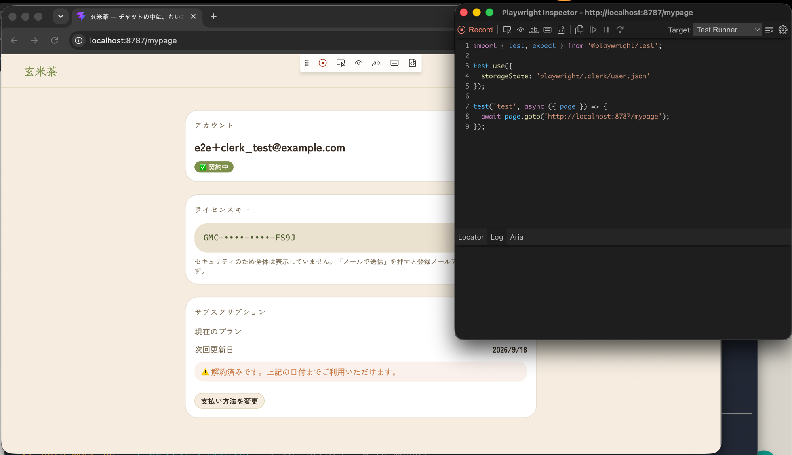
録画中にやること: 表の「前提条件」列に書いた状態を、画面を操作して自分で作る。そのうえで「期待結果」を見る画面まで進む。
たとえば前提条件が「A は購入済み、B は未購入」なら、1回の録画の中で A として購入し、続けて B としてマイページを開くところまでを通しで操作する。前提条件を作る操作も録画に含める。
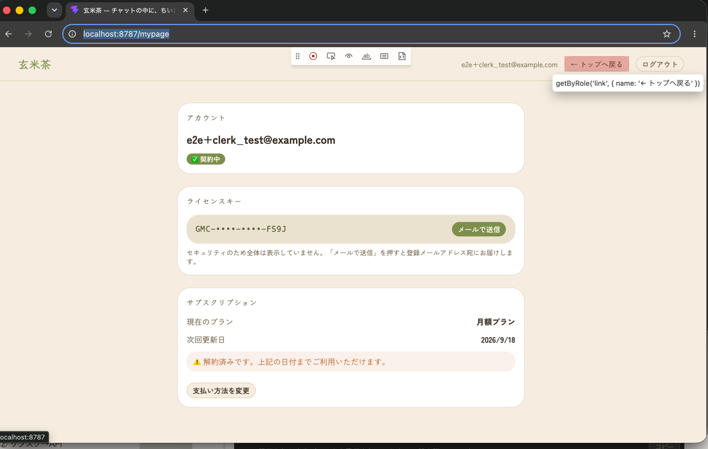
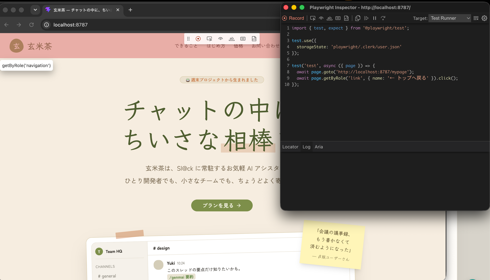
.click() の行が増える。増えるのは操作の行だけで、判定の行（expect）は1つも出ない操作し終わったらブラウザを閉じる。閉じた時点でファイルが書き出される。
⚠️ 画面が自動で切り替わったときは、生成された
gotoを必ず見ること。Codegen が書く
gotoは開いた URL ではなく、移動が終わったあとの URL になる。未ログインで/mypageを開くとサインイン画面に飛ぶが、そのとき生成されるのはこうなる。// 開いたのは http://localhost:8787/mypage なのに… await page.goto('https://<認証サービスのホスト>/sign-in?redirect_url=...');このまま実行するとサインイン画面を開いてサインイン画面が出ただけのテストになり、確かめたかったことが消える。自分のアプリの URL に戻すのは ③ の検証追加でやる。
検証（目玉マーク）は押さなくてよい。 検証は次の工程で AI に書かせる。
| 録画中の注意 | 理由 |
|---|---|
| 実名・実メールを入れない | 入力値がテストコードに残り Git に入る。test@example.com を使う |
| 迷ってクリックしない | 押した操作がすべてコードになる |
完了: tests/ に .spec.ts が2本できている（中身は操作だけで expect はゼロ）。
③ 検証を足して実行する
② で録画したファイルは、操作を再生するだけでまだ何も確かめていない。判定（expect）が1行も無いため、このまま実行すると、画面の表示が間違っていても操作さえ通れば緑になる。表の「期待結果」どおりの画面になったかを判定する行が足されて、初めてテストになる。
やること: 録画したファイル1本ずつ、AI に検証（期待結果の判定）を足させる。
埋めるのは < > の1箇所だけである。ファイル名に表の番号が入っているので、どの行かはそれで伝わる。あとの3行はそのままコピーする。
tests/<録画したファイル名> を、docs/TEST.md の「## テスト項目」の
同じ番号の行に合わせて仕上げて。
・表の「前提条件」から始めて、「期待結果」を確かめて終わる形にする
・期待結果は表の文言だけを根拠にする。実装コードは読まないこと
・録画に入り込んだその場限りの値や外部サイトの URL は、何度実行しても通る形に直す⚠️ 「このアプリのテストを書いて」と頼まないこと。
そう頼むと AI は実装を読み、今の動きをバグごと正解にする（「流れ」に書いた理由と同じ）。表だけを根拠にさせるため、2行目の「実装コードは読まないこと」を必ず入れる。
自分でやること: AI が書いたテストを開き、確認として足りているかを見る。
⚠️ 録画したときの画面の値が、そのまま埋まっていないか。
Codegen はいま画面に出ている文字で要素を掴む。掴んだ文字がそのとき表示されていたデータだと、次に実行したときには別の値になっていて画面に存在しない。アプリは正しいのにテストだけが落ちる。
毎回変わる値ではなく、変わらない形で探す形に直す。
下は玄米茶サンプルの場合である。購入の証の欄をクリックしたときの例を示す。
// 録画されたまま（そのとき発行されていた購入の証の値を探している） await page.getByText('GMC-••••-••••-FS9J').click(); // 直したあと（購入の証の形を探している） await expect(page.getByText(/^GMC-/)).toBeVisible();
実行する:
npx playwright test落ちたら --ui を付けて実行し直す。ステップごとの画面が見える。
npx playwright test --ui結果を表に書く: 2本それぞれについて、docs/TEST.md の結果列の「[12] で確認予定」を実際の結果（緑／落ちた）で上書きする。
完了: 2本とも実行し、結果列が書き換わっている。赤でも問題ない。原因は次の工程で判定する。
④ 赤の原因を決める（赤が出たときだけ）
やること: まず AI に原因を切り分けさせる。この時点では直させない（理由は [6] ⑤ テスト結果 と同じである。まとめて頼むと、AI はテストの期待値を緩めて緑にする道を選ぶ）。
tests/<落ちたファイル名> が落ちた。次の3つのどれかで判定して。
・実装が要件を満たしていない
・テストの書き方が悪い
・どちらとも言えない（要件にも SCREEN_SPEC.md にも書かれていない）
判定だけ報告して。まだ何も直さないこと。| 原因 | どうするか |
|---|---|
| テストの書き方が悪い（要素の指定が曖昧など） | AI にテストを直させる |
| 実装が要件を満たしていない | AI に実装を直させる。再実行して緑を確認する |
| どちらとも言えない（仕様が決まっていない） | 自分で決める（下記） |
3つ目が出たときが、この課題の山場である。 AI に決めさせず、自分で決める。
| 自分の判断 | やること |
|---|---|
| 今の動きで正しい | [6] ① の要件と [6] ② の期待結果のほうを直す |
| 今の動きは直すべき | AI に実装を直させる |
結果列を書き換える: 決まったら、AI に docs/TEST.md の該当行を書き換えさせる。
docs/TEST.md の「## テスト項目」の <番号> の行の結果列を
「落ちた → <原因> → <どう決めたか>」に書き換えて。
ほかの列と行は触らないこと。完了: 赤だった行について、直したか・仕様として認めたかが決まっていて、結果列がそこまで書き換わっている（例:「落ちた → 実装を直して緑」）。
⑤ push する
やること: ④ まで終えたら push する。
先に .gitignore に次の5行があるか確認する。無ければ足す。最後の行は [10] 実施済みで @clerk/testing を使った場合の認証状態の保存先である。使っていなければ該当ディレクトリ自体が無いので、入れたままで害はない。
/test-results/
/playwright-report/
/blob-report/
/playwright/.cache/
/playwright/.clerk/E2E テストの作業をコミットして push して。完了: test-results/ playwright-report/ が入っていない状態で push できている。
⚠️ ハマりどころ
frontendのnpm run devで録画してしまう: API が動かないので、購入も送信も失敗する。backendのnpm run devが表示した URL を使うことtests/の中でcodegen -o tests/...を実行する:-oは実行した場所からの相対パスなので保存先が見つからず、録画がそのまま消える。必ずリポジトリのルートで実行するnpm run build:frontを忘れる: 画面が古いまま配信される。しかも [6] のテストは全部緑になるので、E2E 以外では気づけない- 同じメールアドレスを使い回す: テストは並列で走るので、互いのデータを踏む
✅ 完了の定義
- ブラウザで確かめる行を2本選び、それぞれ
tests/に spec ファイルがある - その2本を実行し、結果列が「[12] で確認予定」から実際の結果に書き換わっている
- 赤が出た行について、直したか・仕様として認めたかを自分で決めた
- 選ばなかった通しの行は、結果列が「[12] で確認予定」のまま残っている（空欄にしない）
[6] は「通し」以外の行について、緑にするか、緑にしない／できない理由を結果列に書くところまでを完了条件にしている。通しの行だけがこの章に回されているので、ここで結果列が埋まると TEST.md の表に空欄がなくなる。
[13] 自動デプロイ（Workers Builds）★★☆
お題: git push するだけで Cloudflare へ自動的にビルド・デプロイされる状態にする（[7] の手動デプロイを卒業する）
ツール: Cloudflare ダッシュボードの Workers Builds（Git 連携によるビルド・デプロイの自動化機能）
前提: [7] で wrangler deploy による手動デプロイまで完了していること
学び: CI/CD の初歩と、モノレポ構成でのビルド設定の考え方
他の Section 3 オプションと違い、ここでの作業はすべて Cloudflare ダッシュボード側の設定で完結する。リポジトリのコードに変更を加える必要は無く、Claude Code に実装を依頼する場面も無い。設定が一度終われば、あとは普段通り
git pushするだけで、Cloudflare 側が自動でビルド・デプロイを行ってくれる。
連携手順
- Cloudflare ダッシュボード → 対象の Worker → Settings → Build から GitHub リポジトリを連携する
- サイドバー最上部の 「Account home」 を選択する
- 画面中央（検索バーの下あたり）に並ぶ一覧から、対象の Worker を選択する
- 画面上部のタブを 「Settings」 に切り替える
- 下にスクロールし、「Build」セクション内の GitHub ボタンを選択する
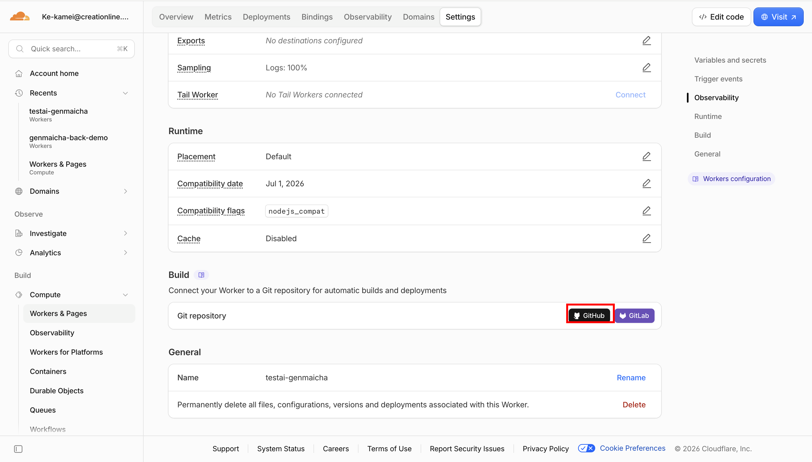
⚠️ リポジトリのアクセス範囲について: GitHub ボタンを押すと GitHub 側で「Install & Authorize Cloudflare Workers and Pages」という許可画面が出る。
ここでも SonarCloud のときと同様に、必ず 「Only select repositories」 を選び、連携したいリポジトリだけを許可すること。「All repositories」を選ぶとプライベートリポジトリのコードすべてに Cloudflare がアクセスできる状態になってしまう。
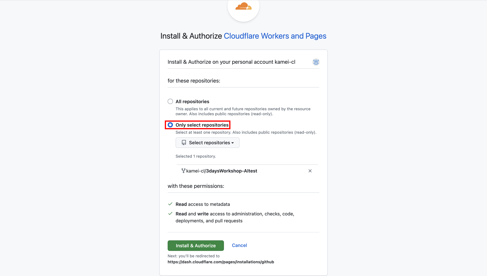
- Cloudflare に戻ると「Connect to a repository」画面が開く。上部の Git account で自分のアカウント（複数の GitHub 組織に所属している場合は連携したいアカウント）を指定する。Repository は直前に許可したリポジトリが自動で選ばれる
- Path（Root directory）を
backendに設定する。モノレポ構成のため必要である。
空のままにすると、Cloudflare が自動生成した誤った設定でデプロイされてしまう（詳細は下記ハマりどころ） - Build command に
npm install --prefix ../frontend && npm run build:frontを設定する （フロントのビルドをここで行う。空のままだとフロントがビルドされない） - Production branch を
mainに設定する（devへの push はプレビューのみになる）。
ただし Git ブランチ の運用（dev→mainマージ後に SonarCloud 解析）と組み合わせる場合は、マージがそのまま本番公開になる点に注意する。詳細は Git ブランチ を参照すること。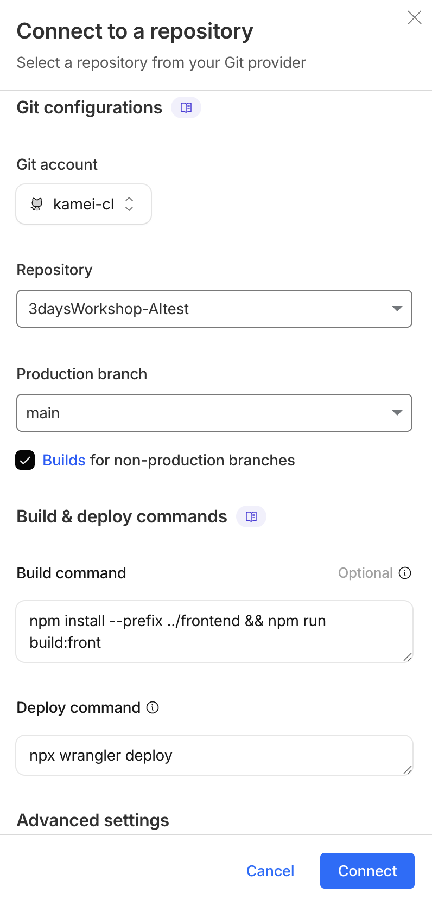
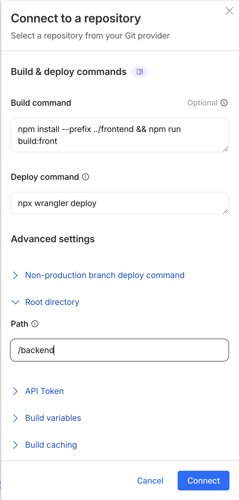
⚠️ ハマりどころ
- Path（Root directory）を設定し忘れると、API が全滅する: このリポジトリは
frontend/・backend/に分かれたモノレポ構成になっている。
そのため Path を空のままにすると、Cloudflare は「ルートに設定ファイルが無い」と判断し、cloudflare-workers-and-pages[bot]がリポジトリのルートに簡易的なwrangler.jsoncを自動生成して PR を送ってくることがある。
この自動生成ファイルは静的配信専用で、API のルーティングも D1/KV のバインディングも含まない。だから誤ってデプロイされると/api/*が全滅（404）し、フロントも未ビルドの生ファイルが配信されてしまう。
対策としてPath 設定を先に済ませ、もし該当 PR が来ていたらマージせずクローズすること - Build command を設定し忘れると、フロントがビルドされない: 既定の Deploy command は
npx wrangler deployだけで、これはvite build（フロントのビルド）を含まない。必ず上記手順4の Build command を設定する - デプロイ直後は数秒〜十数秒、変更が全世界のエッジサーバーに伝播しきっていないことがある。すぐにアクセスして 404 が出ても、少し待ってから再確認する
✅ 完了の定義
上記の連携手順を終えたら、何か軽微な変更（コメント追加など）をコミットして dev に push するだけで、Cloudflare ダッシュボードの Deployments に新しいビルドが自動的に現れることを確認する。これが確認できれば完了である。余裕があれば、dev → main にマージ・push し、本番 URL（workers.dev）にその変更が反映されるところまで確認する。
Workers Builds の動作確認用に、軽微な変更（コメント追加など）をコミットして dev ブランチに push して。[14] 運用保守の自動化★☆☆
お題: 公開後の運用を体験する。扱うのは監視、ログ、障害特定、対策、コストの5つ
実装先: .claude/skills/（運用スキルを Claude Code に作らせる）
学び: 公開後の「運用」を Claude Code のスキルで仕組み化する
まず: Cloudflare API トークンを用意する
wrangler だけだと取得できる情報に制限がある。ログ集計やコスト試算には API トークンが要る。
- Cloudflare ダッシュボード右上のアイコン → Profile を選択する

- 左メニューの API Tokens → Create Token をクリックする

- 「Create Custom Token」の Get started をクリックする

- Token name を入力し、Permissions を Account / Account Analytics / Read にして作成する

- 取得したトークンを
backend/.cf-ops.tokenに保存（例CLOUDFLARE_API_TOKEN=...の1行）。.dev.varsとは別ファイルにする（理由は下記）。リポジトリのルートの.gitignoreにbackend/.cf-ops.tokenを追加しておく
このトークンは Worker が使うのではなく、運用スキルが shell からファイルを読んで使う（Cloudflare の集計 API（GraphQL）を叩くため）。
ここで注意したいのが置き場所である。
.dev.varsは Section 1 のセキュリティ対策で Read を拒否しているので、スキルがcat等で読もうとするとブロックされる。そこで運用トークンだけは deny 対象外の別ファイル（
.cf-ops.token）に置く。ここに入れるのは Analytics 読み取り専用の低権限トークンなので、Stripe/Clerk 等の高価値シークレット（.dev.vars）と分けても危険は増えない。なお本番 secret に入れる必要はない（ローカルにあれば十分）。また、トークンが無くても
wrangler tailのライブログは見られる。トークンが必須なのは集計・コスト試算だけである。
運用チェックを「スキル」にする
Claude Code のスキルとは、.claude/skills/<名前>/ ディレクトリに必要なファイルを置くことで、「運用チェックして」のような自然言語で呼び出せる専用コマンドを登録できる機能である。
[5] で使った /code-review のように、インストールなしで最初から使えるものを「組み込みコマンド」と呼ぶ。
一方、Section 1 で入れた security-guidance のような「プラグイン」は、スキルなどをまとめて配布するパッケージである。
毎回同じ確認をスキル（.claude/skills/）にしておけば、「運用チェックして」の一言で再利用できる。ここで作ってもらうスキルは次の5つ。
| # | スキル | やること | 置き場所 |
|---|---|---|---|
| 1 | インフラ障害確認 | 依存サービス（Cloudflare/Clerk/Stripe/Resend）の公開ステータスを確認 | .claude/skills/infra-status/ |
| 2 | ログ取得 | Cloudflare のログ／エラーを取得して問題がないか確認 | .claude/skills/cf-log-check/ |
| 3 | 障害箇所の特定 | ログ・直近デプロイをソースと突き合わせて原因を絞る | .claude/skills/fault-localize/ |
| 4 | 対策・回避策 | ログ内容から恒久対策・暫定ワークアラウンドを出す | .claude/skills/remediate/ |
| 5 | コストモニタリング | requests / CPU 時間からコストを試算 | .claude/skills/cost-monitor/ |
5つを一気通貫で回す統合スキル
ops-checkにまとめてもよい（.claude/skills/ops-check/）。いずれも Claude Code に作らせ、自分のサービス向けに調整する。
手順
- 上記の手順で API トークンを作成し、
backend/.cf-ops.tokenに保存する（.dev.varsとは別ファイル。理由は上記） - スキルを Claude Code に作ってもらう → 「運用チェックして」で実際に動くか確認する
.claude/skills/ 以下に、本番運用チェック用のスキルを5つ作って。 1. infra-status: Cloudflare/Clerk/Stripe/Resend の公開ステータスページを確認して障害有無をまとめる 2. cf-log-check: wrangler tail で本番 Worker のログ・エラーを取得して問題がないか確認する 3. fault-localize: ログと直近のデプロイ差分をソースと突き合わせて障害箇所を絞り込む 4. remediate: 特定した原因への恒久対策と暫定ワークアラウンドを提案する 5. cost-monitor: Cloudflare の GraphQL Analytics API で requests / CPU 時間を集計してコストを試算する 共通の前提: - Cloudflare API トークンは backend/.cf-ops.token に CLOUDFLARE_API_TOKEN=... の形式で置いてある。 集計が必要なスキルはこのファイルを読んで使う（.dev.vars は読まない） - 使っていないサービス（Stripe/Clerk/Resend など）があれば対象から外して - 5つを順に実行して結果をまとめる統合スキル ops-check も作って。「運用チェックして」で ops-check が動くようにして
✅ 完了の定義
5つ作らせたうち、最低1つが実際に動作すれば完了である（「運用チェックして」で応答が返ること）。時間内に5つとも動かすことは求めない。残りは持ち帰りで調整してよい。
運用保守の自動化の作業をコミットして dev ブランチに push して。ラップアップ・発表会（Section 3 の最後 30 分）
最終発表会（1人3分）
Section 3 の最後の 30 分を発表会にあてる。1人3分で手短に行う。
- 自分の公開 URL のデモ
- Section 3 で追加した機能の紹介
- 学びの共有。AI で開発するにあたり独自に工夫したポイントを1つ挙げる
振り返り
- このワークショップで体験した開発サイクル: デザイン生成 → 実装 → テスト → 公開 → 機能拡張 → 点検
- AI 開発で効いたコツの総まとめ
- 1発で完璧を狙わず、会話で直す
- やりたいこと・受け入れ条件を先に .md 化してから渡す（細かい設計やテスト観点の洗い出しは AI に任せる）
- 秘密情報は AI に渡さない
- テストがあるから大胆に拡張できる
- 持ち帰り: 自分の URL で公開された自分の SaaS 🍵
- 質疑応答・アンケート（詳細は当日案内）
後片付け
ワークショップを通じて外部サービスに実リソースを作った。使い続けるものは残し、使わないものは片付ける/無効化する。放置は無料枠の圧迫や不要な鍵の漏洩リスクになる。
迷ったら: 公開 URL（Cloudflare Worker）は残し、今後使わない鍵（Stripe / Clerk / Resend など）は無効化する。下表で自分の使い続けたい機能だけ「残す」、それ以外は「片付ける」を選ぶ。
作ったリソースの退場手順
| リソース | 残す場合 | 片付ける場合 |
|---|---|---|
| Cloudflare Worker / D1 | ポートフォリオとして公開したままでよい（無料枠内） | ダッシュボードで Worker を削除（D1 も個別に削除） |
Cloudflare API トークン（.cf-ops.token） | [14] の運用チェックを続けるなら残す（低権限の Analytics 読み取り専用） | ダッシュボードでトークンを Revoke（無効化）し、手元の .cf-ops.token も削除 |
| Stripe（テストモード） | そのまま放置で害はない（テストモードは課金されない） | 不要なら Webhook エンドポイントを削除（live mode には切り替えていないので実害なし） |
| Clerk アプリ | 残すならそのまま | 不要ならアプリを削除。frontend/.env の鍵も消す |
| Resend API キー | 公開アプリでメール送信（[8]）を使い続けるなら残す | ダッシュボードで API キーを Revoke（無効化） |
| SonarCloud / GitHub App | 継続解析するなら残す | 不要なら SonarCloud のプロジェクトを削除し、GitHub の Installed App から権限を解除 |
| Cloudflare Workers Builds（Git 連携。[13] を試した場合） | 継続して自動デプロイを使うなら残す | 不要なら Cloudflare 側で「Disconnect」し、GitHub 側でも2箇所解除する（表の下の折りたたみ参照） |
Workers Builds（Git 連携）の解除手順を見る
- Cloudflare の Worker → Settings → Build で「Disconnect」する
- GitHub 右上のアイコン → Settings → Applications → Installed GitHub Apps → Cloudflare Workers and Pages を Uninstall。これでリポジトリへのアクセスが消える
※ Settings はリポジトリ側ではなくアカウント側から入る - 同じ Applications 内の Authorized GitHub Apps タブ → Cloudflare Workers and Pages を Revoke。これはユーザー認可の取り消しで、2 の Uninstall だけでは残ってしまう
画面に出てくる Suspend は一時停止用の別ボタンなので、完全に片付ける場合は使わない。
原則: 鍵（API キー・トークン）は「消す」より先に「無効化（Revoke）」する（消しても発行済みの鍵は生きているため）。手元の .dev.vars / .cf-ops.token はローカルファイルなので削除でよい（Git には元々入れていない）。
「高速Webサービス開発」ワークショップ
付録: Claude Code 認証切り替えガイド
対象: 普段は API キーで使っている人が、一時的に Claude Code サブスクに切り替え、用が済んだら API キーに戻すための手順である。
これだけ覚える: どのキーを使うかは~/.claude.jsonの記録で決まる。rejectedにあるキーは無視されてサブスクが使われ、approvedにあるキーは使われる（サブスクより優先）。切り替えとは、この記録を/configや起動時プロンプトで書き換えること。
認証の記録は ~/.claude.json にある
「どのキーを使う / 使わない」は ~/.claude.json の customApiKeyResponses に記録される。
approved（使うキー）と rejected（使わないキー）の2つの配列があり、キーは末尾20文字だけが記録される（フルキーは保存されない）。

~/.claude.json の例 — approved に API キーが入っている＝この API キーで動いている状態キーの3つの状態
| 状態 | 意味 | 起動時の挙動 |
|---|---|---|
approved | このキーを使う、と承認済み | この API キーで動く（サブスクより優先） |
rejected | このキーは使わない、と拒否済み | キーを無視してサブスクで動く |
new | まだどちらも選んでいない | 「このキーを使う？」と確認が出る |
① API → サブスク: 一時的にサブスクへ切り替える
普段の API キー運用から、一時的にサブスクを使い始めるときの手順である。
- Claude Code のセッション内でログアウトする（
approvedが空になり、古いサブスクのログインも消える）。/logout
/logout（Anthropic アカウントからサインアウト） - Claude Code を起動しなおす。env に API キーが残っているので「このAPIキーを使うか？」と聞かれる。ここで 「2. No (recommended)」を選ぶ。
claude
env の API キー検出プロンプト → No を選ぶ - No を選ぶと、ログイン方法の選択画面が自動で表示される（
/loginを打つ必要はない）。「1. Claude account with subscription」を選び、ブラウザで claude.ai（Pro / Max 等）にログインする。
ログアウト後に claude を再起動すると自動表示される → サブスクを選ぶ - 認証方式を確認する。
claude.aiになっていれば成功である。~/.claude.jsonはapprovedが空・rejectedに当該キーが入った状態になる。/status
切替後: approved が空、rejected に API キー
環境変数の API キーは 消さなくてよい（/logout が承認を外すのでサブスクが使われる）。ただし起動のたびに確認プロンプトが出るのが煩わしければ、そのシェルで unset ANTHROPIC_API_KEY しておくとプロンプトが出なくなる。
② サブスク → API: 普段の運用に戻す
サブスクの用が済んで、普段の API キーに戻すときの手順である。ゴールはキーを rejected から外すことである。/config の ON で rejected から外れ、approved として記録される。
- env に API キーがあることを確認する（無ければ設定）。普段
~/.zshrc等に書いてあるならそのままでよい。export ANTHROPIC_API_KEY="sk-ant-xxxxxxxx" - Claude Code を起動する。
claude - API キーを有効化する。① の直後はキーが
rejectedに入っているため起動時プロンプトは出ない。/configを開き「Use custom API key」を ON にする（キーが未決定=newの場合は起動時に確認が出るので、そのときは「1. Yes」でもよい）。/config - 認証方式を確認する。API キー利用になっていれば成功である。
~/.claude.jsonはapprovedに当該キーが入りrejectedが空の状態に戻る（冒頭の~/.claude.jsonの例と同じ状態）。/status
一度「使わない」を選んでいると、キーは rejected に入っている。
/config の ON で自動的に approved へ移るので問題ない。手動でやるなら ~/.claude.json の customApiKeyResponses.rejected から
該当キーの末尾20文字のエントリを削除する（削除すると new に戻り、再度確認プロンプトが出る）。
確認とトラブルシュート
確認に使うコマンド
現在の認証方式を見る（Claude Code セッション内）:
/statusapproved / rejected の登録件数を確認する（キーの値は表示されない）:
jq '.customApiKeyResponses | {approved:(.approved|length), rejected:(.rejected|length)}' ~/.claude.jsonうまく切り替わらないとき
| 症状 | 原因 | 対処 |
|---|---|---|
| サブスクにしたのに API のまま | キーが approved に残っている | /logout、または /config のトグルを OFF |
| API にしたいのに使われない | キーが approved に無い（new/rejected） | /config を ON、または起動時プロンプトで「使う」 |
| ログインしても接続が切れる | ANTHROPIC_AUTH_TOKEN / CLAUDE_CODE_OAUTH_TOKEN が env に残存（承認ゲート無しで効く） | 該当変数を unset して再起動 |
/logout しても API が消えない | /login で入力・保存したキー（keychain）は logout で消えない | /status でソースを確認し、/login でサブスクに入れ直す |
秘密情報の扱い: API キーの値をチャットやコードに貼らない。git 管理下のファイルにも書かない。恒久設定は各自の ~/.zshrc 等にとどめる。
仕組み（詳細・読まなくても切り替えはできる）
認証の優先順位
複数の認証情報があると、上ほど優先される。
| 順位 | 認証方式 |
|---|---|
| 1 | クラウドプロバイダの資格情報（Bedrock / Vertex 等） |
| 2 | ANTHROPIC_AUTH_TOKEN（Bearer トークン） |
| 3 | ANTHROPIC_API_KEY — ただし approved のときだけ採用 |
| 4 | apiKeyHelper スクリプト |
| 5 | CLAUDE_CODE_OAUTH_TOKEN |
| 6 | サブスクの OAuth（/login で保存） |
ANTHROPIC_API_KEY は承認ゲートがあり、未承認なら無視されてサブスクにフォールバックする。一方 ANTHROPIC_AUTH_TOKEN / CLAUDE_CODE_OAUTH_TOKEN はゲートが無く、セットされていれば効く。
/logout が実際にすること
customApiKeyResponses.approvedを空にする（承認済みキーが外れる）- サブスクの OAuth 資格情報を消す
- オンボーディング状態をリセット → 次回起動で確認プロンプトが再表示される
rejectedには何も追加しない。/loginで保存した keychain 上のキーも消さない
2つの「キーの保管場所」
- 環境変数
ANTHROPIC_API_KEY… 承認（approved/rejected）で制御する。本ガイドではこれを前提とする。 - 保存キー
primaryApiKey（macOS Keychain）…/loginでキーを直接入力した場合の保管先である。/logoutでは消えない。env 運用なら基本使われない。
補足: --bare / CLAUDE_CODE_SIMPLE などの簡易モードや非対話実行（claude -p）では、確認プロンプトを出さずに env のキーを直接使う経路がある（＝承認ゲートを通らない）。通常の対話起動は承認ゲート経由である。
出典: Claude Code 公式ドキュメント（authentication）＋ v2.1.216 の実挙動確認。動作確認時点: 2026-07。